How-to
How-to section contains examples on how to include common energy system components in your model. The examples assume that you have sufficient understanding of FlexTool basics (e.g. by doing the tutorial). Each example will either include an example database file that is located in the 'how to examples databases' folder or the example is included in the examples.sqlite as a scenario. If the example is in its own database, you can switch to that database by selecting the 'input' data store in the workflow and then changing the database by clicking the folder icon next to the current database file path in the 'Data store properties' widget. Navigate to the 'how to example databases' folder and choose the appropriate database.
This section is divided into two parts:
Building parts of the model:
- How to create basic temporal structures for your model
- How to create a PV, wind or run-of-river hydro power plant
- How to connect nodes in the same energy network
- How to set the demand in a node
- How to add a storage unit (battery)
- How to make investments (storage/unit)
- How to create combined heat and power (CHP)
- How to create a hydro reservoir
- How to create a hydro pump storage
- How to add a reserve
- How to add a minimum load, start-up and ramp
- How to add CO2 emissions, costs and limits
- How to create a non-synchronous limit
- How to see the VRE curtailment and VRE share results for a node
- How to create a delay between two nodes
Setting different solves:
- How to run solves in a sequence (investment + dispatch)
- How to create a multi-year model
- How to use a rolling window for a dispatch model
- How to use Nested Rolling window solves (investments and long-term storage)
- How to use stochastics (representing uncertainty)
General:
- How to use CPLEX as the solver
- How to create aggregate outputs
- How to enable/disable outputs
- How to make the Flextool run faster
- How to use Benders decomposition (spatial)
- How to use timeset weights (non-RP weighted timesteps)
- How to read the LP scaling diagnostic report
- How to export a partial Excel template (parameter-group picker)
- How to use representative-period clustering with scalar profiles
How to create basic temporal structures for your model
(time_settings_only.sqlite)
FlexTool allows to build models for different kinds of purposes and has therefore a flexible temporal structure, which requires some learning at first. To get you started, this how-to creates three different timelines: a full year, a 48h timeline and a timeline with five one-week periods to represent a full year. To be able to choose which of these are used in a given scenario, three alternatives are created: init, init_2day-test, init_5week-invest.
The names of these alternatives hint at the intended use of each timeline. Even when you are building a large model with a long timeline, it is better to use a short 48 hour timeline for testing purposes when building the model. Using five one-week periods, i.e. "a representative periods", in an investment model is a method to reduce the model size and consequently solve time. More about that in How to run solves in a sequence (investment + dispatch)
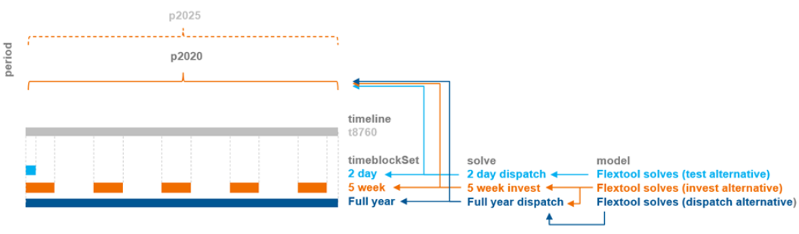
To define a temporal structure for a model instance, you need to create the following entities:
timelineentity called y2020 with a map-type parametertimestep_durationthat defines the timeline the time series data in the model will need to use. It contains, in the first column, the name of each timestep (e.g. t0001 or 2022-01-01-01) and, in the second column, the length of the timestep in hours (e.g. 1.0). The timestep names here must match the timestep names in other time series likeinfloworprofile. Here all of the three options use the same full year timeline i.e. timesteps from t0001 to t8760 with a step size of one hour.timesetentities called full-year, 2day and 5week. Each of them need a map-type parametertimeset_durationto define a timeset using a timestep name to indicate where the timeset starts and a number to define the duration of the timeset in timesteps: (t0001, 8760) for the full-year and (t4001 and 48.0) for the 48h. The timeline is larger than the 48 hours, but this way the solver uses 48 hours specified. The 5week needs five starting points t2521, t4538, t5041, t7057 and t8233 with all having the length of 168.0timesetneeds to be connected to the timeline. This is done by adding thetimesetparametertimeline. Each of the threetimesetsinclude the value y2020.-
solveentities called full-year-dispatch, 2day-dispatch and 5week-invest. In addition, they need the following parameters: -
a map-type parameter
period_timesetto define the timeset to be used by each period. Here each of the three use theirtimesetto describe the same period p2020. The first column of the map has the period: p2020 and the second column thetimeset: full-year, 2day or 5week - an array-type parameter
realized_periodsto define the periods that are realised from thesolvenamed by the entity (the first column of an array is an index number starting with 0, the second column contains the period to be realized in the results: p2020 for all the solves here) -
a parameter
solve_mode, to be set to single_solve in these examples -
Finally, a
modelentity will define the solves to be included in a one model instance. They are defined in the array parametersolves. For these examples, the model name is flextool and for eachsolvethe name of thesolveshould be given in thesolvesarray (distinguished by the alternative): full-year-dispatch, 2day-dispatch or 5week-invest.
Be careful when choosing datatypes! Maps need to be maps not arrays. You will see a red exclamation mark if you are using the wrong datatype. (In the future, an update is coming to toolbox to ensure compliance.)
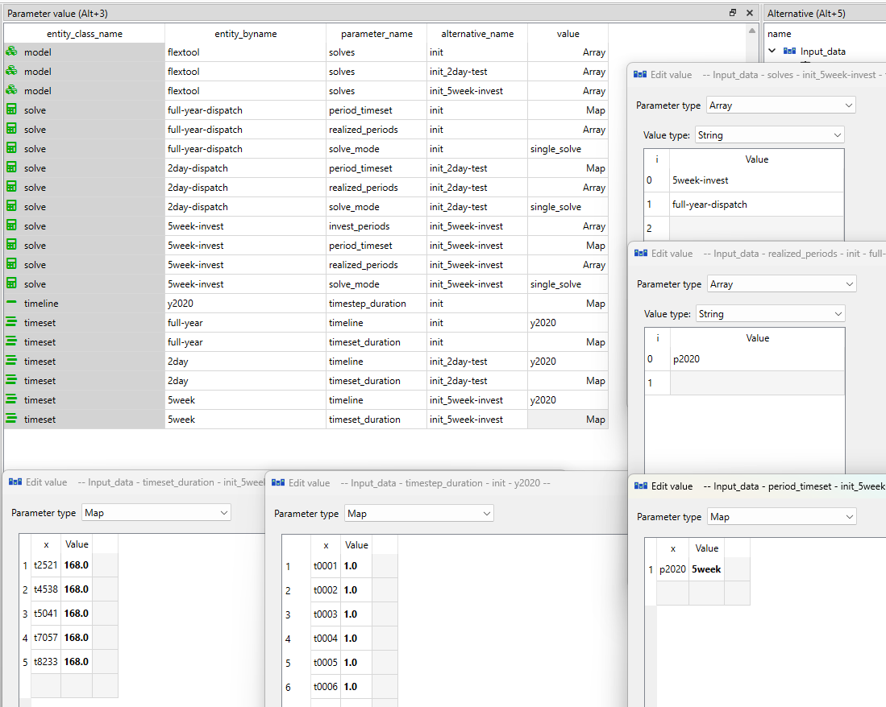
The tool includes some assumptions about the time structure, in case something is missing. These will work if there is only one option for the model to choose. The assuptions are the following:
- If
timeset:timelineis not set and only onetimelineis defined, it is used - If no
timesetis exist and only onetimelineis defined, create a full timeline timeset - If
period_timesetis defined, but norealized_periodsorinvest_periodsexists, all periods are realized - If
period_timesetdoes not exist and only onetimesetexists, createtimesetsfor allrealized_periodsandinvest_periods - If
model:solvesdoes not exist, and only onesolveexists, that it is used - If a
solveinmodel:solvesdoes not exist, create asolvewhere allperiods_availableare realized
How to create a PV, wind or run-of-river hydro power plant
(examples.sqlite scenario: wind) init - west - wind
These three power plant types don't use any commodities (i.e. fuels), but are instead dependant on a timeseries profile. To create these plants one needs an output node, an unit and a profile.
The unit needs to be added to an alternative in the Entity Alternative sheet (if Toolbox 0.8, after 5/2024).
The unit only needs parameters:
existing: [The maximum capacity of the plant] Additionally these parameters should be at their default values:conversion_method: constant_efficiencyefficiency: 1is_active: yes (if Toolbox 0.7, before 5/2024)
The profile entity only has one parameter: profile. It is a timeseries map which tells what fraction of the capacity the plant can produce at each timestep.
The other entities
unit__outputnode: (plant|output node) andunit__node__profile: (plant|output node|profile) need to be both created.
The unit__node__profile entity needs a parameter profile_method that has three options: upper_limit, lower_limit and exact. It states how the profile is considered. In most cases the upper_limit option should be used as it allows the plant to curtail the production if there is more supply than demand. Otherwise the output node might have to use downward_penalty to spill energy.
The same profile can be used for multiple unit__outputnodes (and that is why the profile is not a unit parameter but its own entity).

How to connect nodes in the same energy network
(connections.sqlite)
Typically nodes are used to maintain an energy balance and therefore they are used to represent a location with demand or a storage. The nodes can pass energy to each other through a connection entity. This is often an electricity connection but it can be any form of energy (or matter) moving between two nodes. To create a connection one needs:
- two
nodes connectionconnection__node__nodeto tie these three together.
The connection and nodes need to be added to an alternative in the Entity Alternative sheet (if Toolbox 0.8, after 5/2024).
The connection needs parameters:
existing: The maximum capacity of the connection [MW]. Applies to both directions.efficiency: represents the losses in transferring the energy. Same in both directions.is_active: yes (if Toolbox 0.7, before 5/2024)
Optional parameters:
is_DC: yes, flag if the connection is counted as non-synchronous for the possible non-synchronous limit. Ifis_DC(direct current) is yes, then the connection is non-synchronous. More at: How-to create a non-synchronous limittransfer_method: Five options: regular (default), exact, variable_cost_only, no_losses_no_variable_cost, unidirectional.
In most cases regular should be used. The downside of it is that it allows the flows to both directions at the same time, but the model does this only in specific circumstances when its beneficial to leak energy through the connection losses. For example, if connection capacity is 500 and efficiency 0.8, both nodes can send 500, but recive only 400 reducing the incoming energy by 100 in both nodes without any cost.
Typically the model does not want to produce extra energy as it usually has costs, but it can happen if there is a cost to curtailing energy generation from a free source or if a unit is forced to generate at some level ('e.g. using profile_method: 'equal'). If non-synchronous constraint is used with a node using this connection, use exact instead as regular connections can circumvent this limit.
Exact method does not allow flow in both directions at the same time, but it requires a binary variable, which will be computationally heavier (especially if the model would otherwise be fully linear).
Variable_cost_only can be used when there are no losses associated with the flow. It allows costs related to the flow, but if losses are to be included, it should not be used.
The no_losses_no_variable_cost can be used when the connection has no losses and no variable costs accociated with the flow. It is computationally the most efficient method, as it uses only one variable for the flow (the variable becomes negative for the other direction, but this can work only when there are no losses or variable costs). It also prevents simultanoues flow to both directions.
The unidirectional method restricts the flow to one direction only (from the first node to the second node in connection__node__node). It uses a single non-negative variable and supports efficiency and other_operational_cost in the usual way. Useful for one-way transmission such as controllable HVDC links or commodity pipelines.
A group can also carry a transfer_method that overrides the per-connection choice for every connection between its member nodes. Set it to any of the connection options above, or to dc_power_flow_with_angles to activate B-theta DC power flow on the subnet (which additionally needs reactance on each connection). See the Groups section of the reference for details.
The results of connections can be seen from the node_balance table. However, these are the results from all the connections connected to the node. If you want summary metrics for an individual connection or a collection of them, create a flowGroup, add the relevant flowGroup__connection__node members, and set flow_aggregator: standalone_aggregator_only on the flowGroup. This produces a flow-group summary (per-period cumulative_flow MWh and average_flow MW, plus a signed net-flow timewise series) for the group.
The example database shows a connection between a two node system where the other node has a wind power plant and the other node has a coal power plant.
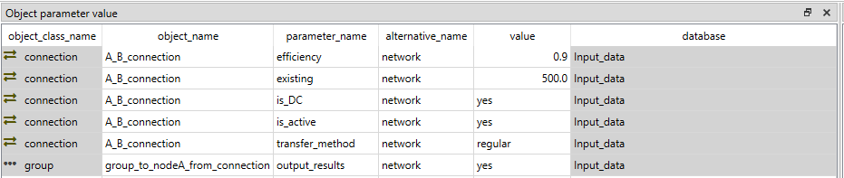
How to set the demand in a node
(demand.sqlite)
The demand in a node is set with the inflow parameter. When the node is consuming energy or matter, the values should be negative and when the node is supplying energy (or matter) the values should be positive. The inflow parameter accepts two types of data:
- Constant
- Timeseries map
If the model is using multiple periods, then the same timeseries profile is used for every period. However, the inflow can be scaled for different periods with the inflow_method parameter:
- scale_to_annual_flow: This will multiply the demand with a constant to make the summed inflow to match the annual_flow. This requires the node parameter annual_flow that is a map of periods containing the annual flow for each period. The sum of inflows is divided by the period's share of the year (hours in period /8760) before scaling (so that the annual energy demand/supply matches the annual_flow no matter what parts of the year are used to represent the full year).
- scale_in_proportion: calculates a scaling factor by dividing annual_flow with the sum of time series inflow (after it has been annualized using timeline_duration_in_years). This does not force the demand/supply to match annual flow in case the representative periods are not representing the full year, but the time series will still be scaled to capture the proportional change in the annual_flow parameter.
- scale_to_annual_and_peak_flow: The inflow scaled so that the peak is at the given peak_flow and the inflow sums to annual flow of the period. This is done by the following equation:
new_inflow = (peak/peak_old)*(1+c)*old_inflow-peak*c
where c =
[(peak/peak_old)*(8760/hours_in_period)*sum(old_inflow) - annual_flow]
/ [peak*8760 - (peak/peak_old)*(8760/hours_in_period)*sum(old_inflow)]
Examples of all these options are shown in the demand.sqlite.
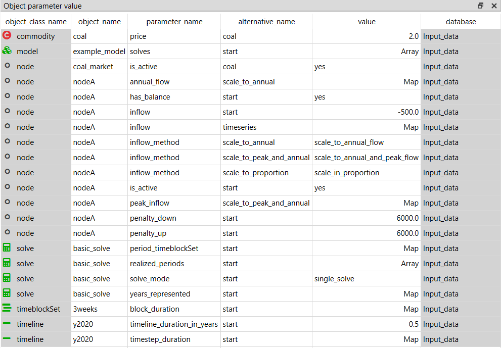
How to add a storage unit (battery)
(examples.sqlite, scenario: wind_battery) init - west - wind - battery
In the Init SQLite database, there is a scenario wind_battery.
In the example, the wind_plant alone is not able to meet the load in all conditions, but the battery will help it to improve the situation.
In FlexTool, only nodes can have storage. Nodes can therefore be demand nodes, storage nodes or both.
The node needs to be added to an alternative in the Entity Alternative sheet (if Toolbox 0.8, after 5/2024).
To make a storage node one the required parameters are:
node_type: storageexisting: The maximum storage size of battery as the potential energy [MWh]penalty_up: a large number to prefer not creating energy from nowherepenalty_down: a large number to prefer not creating energy from nowhereis_active: yes (if Toolbox 0.7, before 5/2024)
Additional parameters:
self_discharge_lossThe fraction of energy loss in each hour.
Storage states can be tied to a value. For this three methods are introduced:
storage_start_end_method: Fixes start and/or end state of the storage to a chosen value. This is for the start and the end of the whole model timeline (not for individual solves in case the model is rolling forward).storage_state_startandstorage_state_endset these values.
storage_bind_method: Forces the start and end values to be the same for the chosen time interval (timeset, period or solve)storage_solve_horizon_method: Fixes the state of the storage at the end of the solve horizon or sets a price for the stored energy at the end of the solve horizonstorage_state_reference_valueandstorage_state_reference_priceset these values
Note on end-of-horizon valuation. When
storage_solve_horizon_method = use_reference_priceis set, thestorage_state_reference_priceis applied in the solver objective (the model sees a credit for leaving energy in the storage at the end of the horizon). However, this credit is not included in the calculated cost totals reported incosts_discounted_*andsummary_solve.csv— end-of-horizon storage valuation has several valid interpretations (reference price × end state, difference between initial and final state priced at an average commodity price, opportunity cost, or simply book value) and is typically done as post-analysis rather than as part of the optimization cost breakdown. If you need the credit as a reported line item, compute it yourself in post-processing from thev_statelast-timestep values and thestorage_state_reference_price.
Having multiple storage methods can create infeasible problems. This is why some of the combinations shouldn't (and cannot) be used at the same time. If multiple methods are used, some of them might be ignored by the method hierarchy. More information can be found from Model Parameters: Using nodes as storages.
Battery also needs charging and discharging capabilities. These could be presented either with a connection or by having a charging unit and a discharging unit. In here, we are using a connection called battery_inverter. Please note that the efficiency parameter of the connection applies to both directions, so the round-trip efficiency will be efficiency squared.
The transfer_method can be used by all types of connections, but in this case it is best to choose regular, which tries to avoid simultaneous charging and discharing, but can still do it when the model needs to dissipate energy. exact method would prevent that, but it would require integer variables and make the storage computationally much more expensive. Model leakage will be reported in the results (forthcoming).
The connection needs to be added to an alternative in the Entity Alternative sheet (if Toolbox 0.8, after 5/2024).
The required paremeters of the connection are:
existing: The capacity of energy transsmission [MW]transfer_method: (see above)is_active: yes (if Toolbox 0.7, before 5/2024)
Additional parameters:
efficiency: by default 1
Finally connection_node_node is needed between inverter, the battery and the demand node (west).
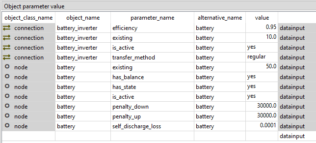
How to make investments (storage/unit)
(examples.sqlite scenario: wind_battery_invest) init - west - wind - battery - battery_invest
Here we will use the previous battery scenario to represent the investment options in the tool.
The solve will invest only if it has an array of invest_periods set, telling the periods where it is allowed to make investment decisions. In a multi solve investment model (rolling investments) it can be useful to separately set invest_realized_periods so that the investment results get reported only from the chosen periods from each solve (in order to avoid overlapping reporting of investment decisions that are replaced by investment decisions in later solves). Furthermore, realized_periods will define the solves and periods from which the dispatch results are output into results.
First, the investment parameters need to be included both for the battery_inverter and battery entities:
-
invest_method- the modeller has options to limit the investment and retirement. Options are not_allowed, invest, retire or invest and retire. These have the sub options of no limit invest_no_limit, limit the amount per period: invest_period, limit the total amount invested invest_total or limit both the total investment and the investment per period invest_period_total. -
If the investment is limited, it requires the corresponding maximum/minimum investment (power [MW] or energy [MWh]) to the virtual capacity. This can be set to individual entities or groups of entities:
invest_max_totalinvest_max_periodinvest_min_totalinvest_min_periodretire_max_totalretire_max_periodretire_min_totalretire_min_period
-
invest_cost- overnight investment cost new capacity [currency/kW] for the battery_inverter and [currency/kWh] for the battery. Other one can be left empty or zero, since they will be tied together in the next phase. Here we will assume a fixed relation between kW and kWh for this battery technology, but for example flow batteries could have separate investments for storage and charging capacities. discount_rate- discount rate (WACC) [e.g. 0.05 means 5%] for the technology that reflects the financing cost and risk. Should be nominal when modelinflation_rate> 0, real wheninflation_rate= 0.lifetime- technical lifetime of the technology to calculate investment annuity (together with the discount rate)
Additional parameters:
lifetime_method: Model can either be forced to reinvest when the lifetime ends (reinvest_automatic), have a choice (reinvest_choice), or be restricted to a one-shot build that retires after its lifetime without rebuild (no_investment— for physical one-off additions like plant refurbishments).salvage_value: Sets the extra value that can be gained for retiring [CUR/kW]fixed_cost: Annual cost for capacity [CUR/kW]
In many cases some of the investment decisions are tied to each other. Here the battery capacity and the connection capacity of the battery_inverter will be tied as they are simultaneously limited by the choice of the battery technology to be invested in.
To model this, a new constraint needs to be created that ties together the storage capacity of the battery and the charging/discharging capacity of the battery_inverter.
A new constraint entity battery_tie_kW_kWh is created and added to an alternative in the Entity Alternative sheet (if Toolbox 0.8, after 5/2024).
It is given parameters constant, sense and is_active (if Toolbox 0.7, before 5/2024). Constant could be left out, since it is zero. The sense of the constraint must be equal to enforce the kw/kWh relation.
Both battery_inverter and battery need a coefficient to tell the model how they relate to each other. The equation has the capacity variables on the left side of the equation and the constant on the right side.
sum_i(`constraint_invested_capacity_coeff` * `v_invest`) = `constant`
where i is any unit, connection or node that is part of the constraint
When the constraint_invested_capacity_coeff for battery is set at 1 and for the battery_inverter at -8, then the equation will force battery_inverter v_invest to be 8 times smaller than the battery v_invest. The negative term can be arranged to the right side of the equation, which yields:
1 x *battery* = 8 x *battery_inverter*, which can be true only if *battery_inverter* is 1/8 of *battery*
constraint_invested_capacity_coeff is not a parameter with a single value, but a map type parameter (index: constraint name, value: coefficient). It allows the entity to participate in multiple constraints. (This parameter was previously named constraint_capacity_coefficient; migration v32 renames existing DBs automatically. The old expression summed v_invest once per active investment period — incorrect in multi-period models — and has been fixed to emit just the current period's v_invest.)
To tie cumulative, built-up capacity rather than the current period's new build, use constraint_cumulative_pre_built_capacity_coeff. It takes data-baseline capacity plus every v_invest made in periods strictly BEFORE the current one, ignoring retirements (learning-effect semantics). Paired with constraint_invested_capacity_coeff, it expresses period-over-period growth limits:
v_invest[e, d] <= growth_rate * pre_built[e, d]
is written as: constraint_invested_capacity_coeff = { c: 1.0 } and constraint_cumulative_pre_built_capacity_coeff = { c: -growth_rate } on entity e, with constraint c having sense = less_than and constant = 0. A 10% growth cap starting from 1000 MW of existing wind would allow 100 MW in period 1, 110 in period 2, 121 in period 3, and so on.
Finally, FlexTool can mix several types of constraint coefficients: constraint_invested_capacity_coeff, constraint_cumulative_pre_built_capacity_coeff, constraint_state_coeff and constraint_flow_coeff allowing the user to create custom constraints between any types of entities in the model for the main variables in the model (flow, state as well as invest). So, the equation above is in full form:
+ sum_i [constraint_invested_capacity_coeff(i) * v_invest]
where i contains [node, unit, connection] belonging to the constraint
+ sum_i [constraint_cumulative_pre_built_capacity_coeff(i) * pre_built]
where pre_built = existing baseline + Σ v_invest from earlier periods
+ sum_j [constraint_flow_coeff(j) * capacity]
where j contains [unit--node, connection--node] belonging to the constraint
+ sum_k [constraint_state_coeff(k) * capacity]
where k contains [node] belonging to the constraint
=
constant
where 'capacity' is existing capacity plus invested capacity
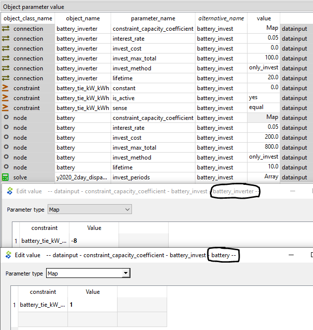
How to create combined heat and power (CHP)
(examples.sqlite scenario: coal_chp) init - west - coal_chp - heat
First, a new heat node is added with the necessary parameters. The nodes can be used for energy form of energy or matter, so the heat demand node does not differ from the electricity demand node.
The heat node needs to be added to an alternative in the Entity Alternative sheet (if Toolbox 0.8, after 5/2024).
The required parameters are:
node_type: balanceinflow: Map for the heat demand (negative) [MW]penalty_up: a large number to prefer not creating energy from nowherepenalty_down: a large number to prefer not creating energy from nowhereis_active: yes (if Toolbox 0.7, before 5/2024)
The heating systems tend to have some level of storage capability, so one could also add storage parameters to the node as well, but here they are not used.
Then the coal_chp unit is made with a high efficiency parameter, since CHP units convert fuel energy to power and heat at high overall rates. In FlexTool, efficiency is a property of the unit - it demarcates at what rate the sum of inputs is converted to the sum of outputs. However, without any additional constraints, the unit is free to choose in what proportion to use inputs and in what proportion to use outputs. In units with only one input and output, this freedom does not exist, but in here, the coal_chp needs to be constrained as otherwise the unit could produce only electricity and no heat at 90% efficiency, which is not feasible.
This CHP plant is an another example where the user defined constraint (see the last equation in the previous example) is used to achieve the desired behaviour. In a backpressure CHP, heat and power outputs are fixed - increase one of them, and you must also increase the other. In an extraction CHP plant the relation is more complicated - there is an allowed operating area between heat and power. Both can be represented in FlexTool, but here a backpressure example is given. An extraction plant would require two or more greater_than and/or lesser_than constraints to define an operating area.
For extraction CHP specifically, the three unit__inputNode / unit__outputNode coefficients interact. conversion_flow_coeff multiplies into the edge's contribution in the fuel balance (conversion_indirect) — higher coefficient means more fuel consumed per unit of that edge's output, so a premium electricity output might use conversion_flow_coeff = 2 while a byproduct heat output uses 0.2. capacity_max_coeff and capacity_min_coeff then set the per-edge upper and lower caps independently. A typical extraction CHP with efficiency 0.9 and elec / heat flow coefficients of 2 and 0.2 can reach pure-condensing mode (heat=0) by setting capacity_min_coeff = 0 on the heat output, and pure-heat mode by setting capacity_max_coeff = 1 on the heat output. Without the capacity-coefficient split, each output would be capped individually at conversion_flow_coeff × capacity, which prevents the model from using the full operating envelope.
Electricity and heat outputs are fixed by adding a new constraint coal_chp_fix where the heat and power co-efficients are fixed. You need to create the two entities unit__outputNode, for coal_chp--heat and coal_chp--west. As can be seen in the bottom part of the figure below, the constraint_flow_coeff parameter for the coal_chp--heat and coal_chp--west is set as a map value where the constraint name matches with the coal_chp_fix constraint entity name. The values are set so that the constraint equation forces the heat output to be twice as large as the electricity output.
Create constraint coal_chp_fix, add it to an alternative in the Entity Alternative sheet (if Toolbox 0.8, after 5/2024) and add parameters:
sense: equalconstant: 0.0is_active: yes (if Toolbox 0.7, before 5/2024)
Create unit_outputNode (coal_chp|heat):
constraint_flow_coeff: coal_chp_fix, -0.5
Create unit_outputNode (coal_chp|west):
constraint_flow_coeff: coal_chp_fix, 2
Again, the negative value can be turned positive by arranging it to the right side of the equality, creating this:
1 x *electricity* = 0.5 x *heat*, which is true only if *heat* is 2 x *electricity*
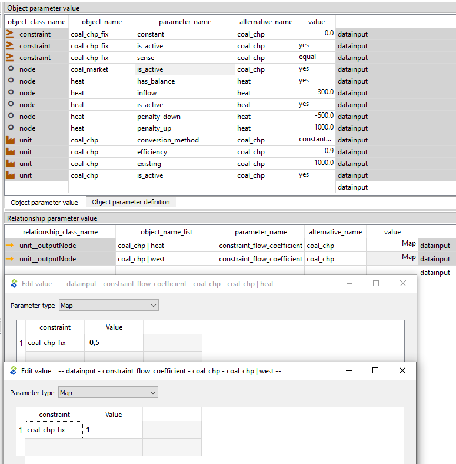
How to create a hydro reservoir
hydro_reservoir.sq
Simple hydro reseroir
(scenario: hydro)
The objective is to create a hydro power plant with a reservoir and connect it to a demand node.
Hydro reservoir power plant requires three components:
- Reservoir
node - Hydro
unit - Output
node
It can be useful to create a new alternative for these components to be able to include and exclude them from the scenarios.
The reservoir is made with a node as only nodes can have storage in FlexTool. The incoming water can be represented by the inflow parameter. It can be a constant or a time variant.
There are two ways to handle the water to electricity coefficient. In this example we store the water as volume and convert it to electricity in the unit. This option is better when modelling river systems with multiple reservoirs. Note that in the results, the state of the reservoir is then as volume. For the other option of converting the volume to potential energy in the reservoir, look at the start of the 'How to create a hydro pump storage'.
In this implementation of reservoir hydro power, there is an option to spill water from the storage so that it does not run through the plant. The simplest way of allowing spilling is setting the downward penalty of the node to 0. This way the energy can disappear from the storage without a cost. The quantity of spilled water can be seen from the results as the 'downward slack' of the node.
Add the reservoir node to an alternative in the Entity Alternative sheet (if Toolbox 0.8, after 5/2024).
The required parameters of the reservoir node are (node_c and node_t sheets if using Excel input data):
node_type: storageinflow: Mapping of the incoming water as volume [m^3/h]existing: The maximum size of the reservoir [m^3]penalty_up: a larger number than with the demand node to not allow creating extra water if not enough electricity is being createdpenalty_down: 0 or a large number (spilling or not)- a
storage_methodto set the behaviour on how the storage levels should be managed - for short duration storages bind_within_timeblock may be best and for seasonal storages it could be best to use bind_within_solve. If historical storage level time series are available, it can be beneficial to use fix_start in thestorage_start_end_methodtogether withstorage_solve_horizon_methoduse_reference_value, which will pick the storage level at the end of each solve from the time series provided as a reference (storage_state_reference_value). Seeflextool/schemas/spinedb_schema.jsonfor the full enumeration ofstorage_binding_methodvalues and the silent-degrade behaviour of the*_blended_weightsvariants; DB migration v55 renamed several legacy names (e.g.bind_within_timeset→bind_within_timeblock). is_active: yes (if Toolbox 0.7, before 5/2024)
The unit is connected to the reservoir node and the output node demand_node (unit_c and unit_node_c in excel):
- Add the unit to an alternative in the
Entity Alternativesheet (if Toolbox 0.8, after 5/2024). - The
efficiencyof the plant is the coefficient of transfering an unit of volume to an unit of electricity (using piecewise linear efficiency is naturally possible), here we use 0.57. - Set
existingcapacity [MW] - Create entities
unit__inputNode: hydro_plant|reservoir andunit__outputNode: hydro_plant|demand_node. is_active: yes (if Toolbox 0.7, before 5/2024)
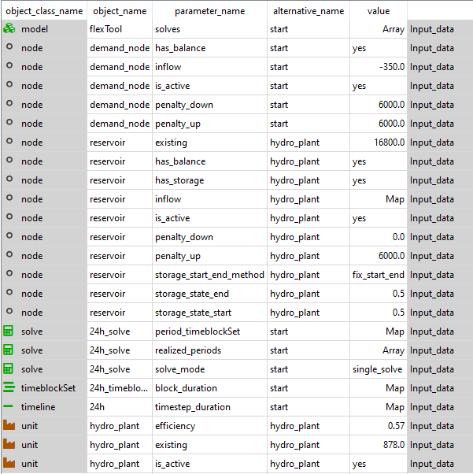
River system with multiple reservoirs
(scenario: hydro_with_downriver_spill_unit) (scenario: river_system)
In this example, we create a hydro system with multiple reseroirs and downriver water demand. Here the the reservoir content is represented as volume of water (m3) and the conversion factor to electricity (MWh) is expressed in the hydro power plant parameters. This could also be done the other way around where the reservoir content is expressed as energy (MWh). Especially in a cascading river system it is better to use the first approach.
The reservoir and demand node are the same as above. The penalty_down of the reservoir now needs to be the other than 0 as the spilled water needs to flow to the downriver node
Let's start with the downriver demand.
The downriver node represents the requirement to pass a minimum amount of water through the plant to not dry out the river. The downriver node needs:
- To be added to an alternative in the
Entity Alternativesheet (if Toolbox 0.8, after 5/2024). node_type: balanceinflow: Minimum requirement of water flow as the potential power (Map or constant)[m^3/h]penalty_up: a large number to prefer not creating energy from nowherepenalty_down: 0, this makes the requirement to be at least the amount of water as the demand, not the equal to itis_active: yes (if Toolbox 0.7, before 5/2024)
The hydro plant unit now also needs the relation unit_outputNode: hydro_plant|downriver .
The hydro plant now needs to both pass the water to downriver and the electricity to the demand node. Also, it needs to handle the water to electricity transformation as the reservoir now has volume not energy. The user needs to get the water to electricity coefficient ie. how much energy does one unit of volume create when passing the unit in this example the coefficient is 0.57. As the unit creates both the water and the electricity, the efficiency now is the sum of the two.
efficiency: 1 + coefficient
Now the unit creates enough stuff to output, but the model can still choose how it will distribute it between the two output nodes. We still need to fix the ratio of output flows. This is done with an user constraint. Here we call this constraint hydro_split. First, it needs to be added to an alternative in the Entity Alternative sheet (if Toolbox 0.8, after 5/2024).
The constraint needs parameters:
sense: equalconstant: 0is_active: yes (if Toolbox 0.7, before 5/2024)
As we are fixing the output flows, the we need to add the flows with their coefficients to this constraint. This is done with the unit_outputNode parameter constraint_flow_coeff:
unit_outputNode(hydro_plant|downriver):constraint_flow_coeff: Map (hydro_split| 0.57)unit_outputNode(hydro_plant|demand_node):constraint_flow_coeff: Map (hydro_split| -1)
These create the constraint:
-flow_to_demand_node + 0.57 flow_to_downriver = 0
The capacity of an unit is the sum of outputs. With the electrical capacity of 500MW and water to elecricity coefficient of 0.57 the water flow capacity is 878 (m^3). Making the total unit capacity 1378 (m^3 / MW). Now at full power, 878 units of water flow to downriver and 500MW of electricity flow to the demand node.
To add a spill option to the reservoir we need to create another unit. This is because just making extra water disappear with the penalty_down: 0, will not transfer this water to the downriver node to fulfil its needs.
This spill unit has to be in entities:
- unit_inputNode (spill_unit|reservoir)
- unit_outputNode (spill_unit|downriver)
It needs to be added to an alternative in the Entity Alternative sheet (if Toolbox 0.8, after 5/2024).
And parameters:
efficiency: 1existing: A large enough number to not be a limitis_active: yes (if Toolbox 0.7, before 5/2024)
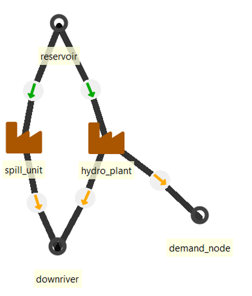
The database also includes an example of a river system with two additional reservoirs and plants. Both of them flow to the reservoir already made in this how to. These two are created the exact same way as above, but with just different values and the relation unit_outputNode: (hydro_plant_2| reservoir) and unit_outputNode: (hydro_plant_3| reservoir).
In principle you can create as large river systems as you want, but each reservoir adds extra computational burden. Think about the possibility to combine the reservoirs and plants in the system and what information you lose with this approximation.
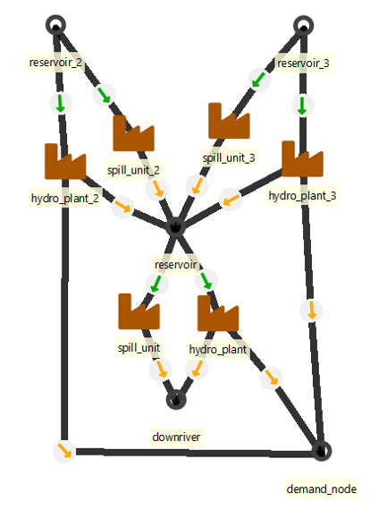
How to create a hydro pump storage
(hydro_with_pump.sqlite)
For a hydro pump storage one needs the following components:
- Demand
node - hydro_plant
unitwith - storage
node, - hydro_pump
unitwith - pump storage
node - a source for external energy (pumped storage plant will lose energy due to charging losses). Wind power plant will be used as a source for external energy.
There are two ways to handle the water to electricity coefficient. Here, we convert the reservoir capacity and inflow to potential energy. The unit of the inflow should be the power that can be created from the quantity of the incoming water at maximum efficiency [MW]. In the same way, the existing storage capacity should be the maximum amount of stored energy that the reservoir can hold [MWh]. In this implementation of reservoir hydro power, there is an option to spill water (energy) from the storage so that it does not run through the plant. The simplest way of allowing spilling is setting the downward penalty of the node to 0. This way the energy can disappear from the storage without a cost. The quantity of spilled energy can be seen from the results as the 'downward slack' of the node.
The reservoir node needs to be added to an alternative in the Entity Alternative sheet (if Toolbox 0.8, after 5/2024).
The required parameters of the reservoir node are (node_c and node_t sheets if using Excel input data):
node_type: storageinflow: Mapping of the incoming water as the potential power [MW]existing: The maximum size of the reservoir as the potential energy [MWh]penalty_up: a large number to prefer not creating energy from nowherepenalty_down: 0 or a large number (spilling or not)- a
storage_methodto set the behaviour on how the storage levels should be managed - for short duration storages bind_within_timeblock may be best and for seasonal storages it could be best to use bind_within_solve. If historical storage level time series are available, it can be beneficial to use fix_start in thestorage_start_end_methodtogether withstorage_solve_horizon_methoduse_reference_value, which will pick the storage level at the end of each solve from the time series provided as a reference (storage_state_reference_value). Seeflextool/schemas/spinedb_schema.jsonfor the full enumeration ofstorage_binding_methodvalues and the silent-degrade behaviour of the*_blended_weightsvariants; DB migration v55 renamed several legacy names (e.g.bind_within_timeset→bind_within_timeblock). is_active: yes (if Toolbox 0.7, before 5/2024)
The unit is connected to the reservoir node and the output node nodeA (unit_c and unit_node_c in excel):
- It needs to be added to an alternative in the
Entity Alternativesheet (if Toolbox 0.8, after 5/2024). - The
efficiencyof the unit can be set to 1 as the inflow time series are directly expressed in MWh (using piecewise linear efficiency is naturally possible). - Set
existingcapacity [MW] is_active: yes (if Toolbox 0.7, before 5/2024)- Create entities
unit__inputNode: hydro_plant|reservoir andunit__outputNode: hydro_plant|nodeA.
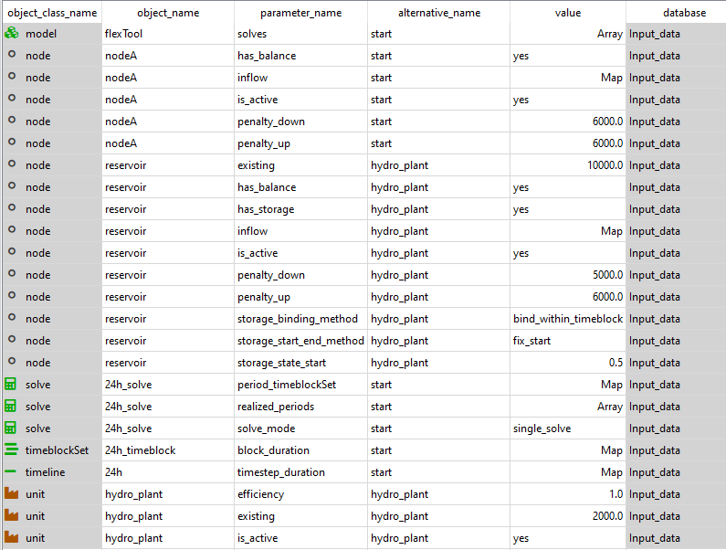
Next create the pump_storage. This is the downstream storage from the hydro plant. Again it should be added to an alternative in the Entity Alternative sheet (if Toolbox 0.8, after 5/2024) and have same the parameters as the reservoir:
node_type: storageexisting: The maximum size of the storage [MWh]. Note that this really represents the mass of the water and it should be converted as the potential of the energy of the reservoir-plant system. So that 1 liter of water has the same energy in both storages.penalty_up: a large number to avoid creating energy from nowherepenalty_down: 0is_active: yes (if Toolbox 0.7, before 5/2024)
In this example database, we have both a closed system and a river system. The difference is that in the closed system the inflow is zero in both reservoir and pump_storage. In river system we have the incoming water for the reservoir as in the reservoir example. In the downstream pump storage, we implement an outflow as the negative inflow representing the minimum amount of water that has to flow out of the system at each timestep to not dry out the river. The penalty_down is set as 0 to allow it let more water go when it needs to, otherwise the storages will keep filling up if the incoming water is larger than the minimum outgoing water.
The storage level fixes should be the same in both storages (reservoir and pump storage). Here:
fix_start_end_method: fix_startstorage_state_start: 0.5bind_storage_method: bind_with_timeset
This sets the starting storage levels to be 50%. The binding will also constrain the state of the storage at the end of of each timeset to be the same as in the beginning of the timeset.
Then create the pump unit and add it to an alternative in the Entity Alternative sheet (if Toolbox 0.8, after 5/2024).
It only needs three parameters:
efficiency= 1, The real efficiency of the pump is set elsewhere, so use 1.0 here.existing: The wanted capacityis_active: yes (if Toolbox 0.7, before 5/2024)
Set the entities as follows:
unit_outputNodefor (hydro_plant | nodeA), (hydro_plant | pump_storage ), (hydro_pump | reservoir)unit_inputNodefor (hydro_plant | reservoir), (hydro_pump | pump_storage), (hydro_pump | nodeA)
Your system should look something like:
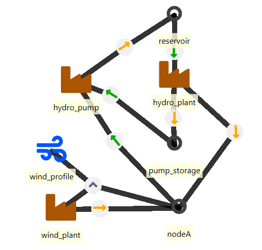
Next comes the tricky part of preserving the water and energy as both are represented as generic energy in the model. This is done by setting extra coefficents and constraints to the flows. First the hydro_plant needs to both create the energy for the demand node and pass the mass to the pump_storage. This is done by doubling the efficiency in this example to 2 and setting a extra constraint to force the output flows to both the demand node and the storage to be the same.
For the hydro plant:
Efficiency: 2
Create a new constraint (here plant_storage_nodeA_split), add it to an alternative in the Entity Alternative sheet (if Toolbox 0.8, after 5/2024) and add the parameters:
sense: equalconstant: 0.0is_active: yes (if Toolbox 0.7, before 5/2024)
And for the unit_outputNodes:
- (hydro_plant | nodeA)
constraint_flow_coeffMap: plant_storage_nodeA_split , 1 - (hydro_plant | pump_storage)
constraint_flow_coeffMap: plant_storage_nodeA_split , -1 - Meaning:
flow to nodeA - flow to pump_storage = 0
As for the pump storage, we will have to make sure that the same amount of water leaves the pump_storage and enters the reservoir. Also it still should use electricity from the demand node without increasing the amount of water that is moving from storage to another. First to prevent the energy from the demand node from increasing the water flow, add a coefficient to the flow between the demand node and the pump.
unit_inputNode (hydro_pump|nodeA):
- Coefficient: 0 (Default is 1)
This prevents the water amount from increasing as:
unit_output_flow = coeff1 * unit_input_flow1 + coeff2 * unit_input_flow2.
Entity Alternative sheet (if Toolbox 0.8, after 5/2024) , and add the parameters:
sense: equalconstant: 0.0is_active: yes (if Toolbox 0.7, before 5/2024)
And setting parameters for unit_inputNode:
- (hydro_pump | nodeA)
constraint_flow_coeffMap: pump_storage_nodeA_fix , 2 - (hydro_pump | pump_storage)
constraint_flow_coeffMap: pump_storage_nodeA_fix , -1
2 * flow_from_nodeA - flow_from_pump_storage = 0
constraint_flow_coeff Map: plant_storage_nodeA_split , 2) actually sets the efficiency of the pump.
This means that here only half of the electricity used by the pump can be recovered when that amount of water is used by the hydro_plant. (Two units of energy are used to move 1 unit of water_energy)
The constraint_flow_coeff for pump_input should therefore be (1/efficiency)
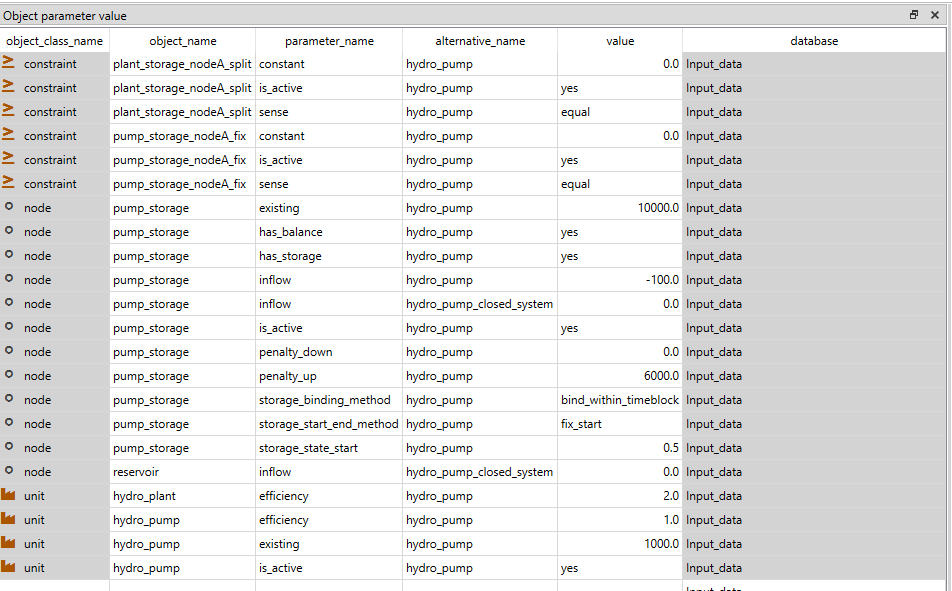
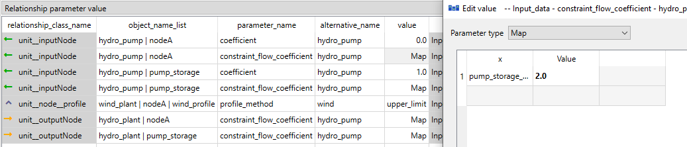
How to add a reserve
(examples.sqlite: scenario network_coal_wind_reserve)
In FlexTool, reserves are defined for a group of nodes. If there is a need to have a reserve requirement for a single node, it needs its own group. Therefore, when creating a reserve, the first step is to add a new group (e.g. electricity) with all member nodes (e.g. west, east and north) using the group__node entity. Then, a new reserve categories can be added (e.g. primary) to the reserve entity.
Finally, make sure there are up and down entities in the `UpDown' entity. These are hard-coded names in FlexTool and need to be used when creating reserves.
Next, the reserve requirement will be defined. An entity between the reserve__upDown__group class (e.g. primary--up--electricity) allows to define the reserve parameters reserve_method, reservation (i.e. the amount of reserve) and penalty_reserve (i.e. the penalty cost in case of lack of reserve). For example, a constant of 10 MW could be used. Even though the name of the reserve_method is timeseries_only, it can also accept a constant value - it's an exogenous reserve requirement whereas the other two reserve methods are endogenous. Dynamic reserve method calculates the reserve requirement from generation and loads according to user defined factors (increase_reserve_ratio). Largest failure method will force enough reserve to cope with a failure of the chosen unit and connection flows.
Parameters from the reserve__upDown__unit__node class should be used to define how different units can contribute to different reserves. Note that the entities in this class need to be added to the Entity Alternative sheet. Parameter max_share says how large share of the total capacity of the timestep (existing * efficiency * (profile)) of the unit can contribute to this reserve category (e.g. coal_plant may be limited by ramp constraint to provide only 1% of its capacity to an upward primary reserve.) Meanwhile, parameter reliability affects what portion of the reserved capacity actually contributes to the reserve (e.g. wind_plant may contribute only 80% of its generation to reserve due to uncertainty).
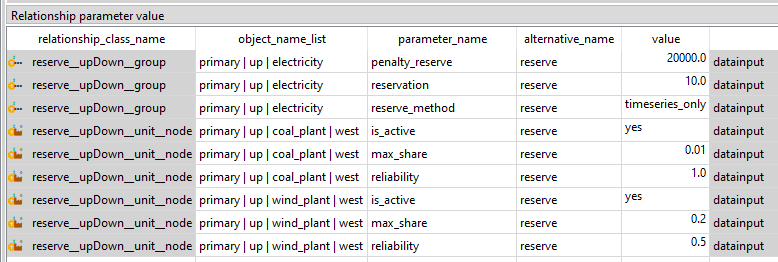
How to add a minimum load, start-up and ramp
(ramp_and_start_up.sqlite)
Some plants cannot vary their output freely, but have some cost and limits associated with it. In this example we will add the minimum load behaviour to a coal_plant unit and add the cost and limits for starting up and ramping the plant respectively.
Minimum load requires that the unit must have an online variable in addition to flow variables and therefore a startup_method needs to be defined and an optional startup_cost can be given. The startup_cost is added to the total cost every time the unit is required to start-up. Here we use a value 1000 (Currency/MW started up).
The options for the startup_method are no_startup, linear and binary. binary would require an integer variable so linear is chosen. However, this means that the unit can startup partially. The minimum online will still apply, but it is the minimum of the online capacity in any given moment (flow >= min_load x capacity x online), where 0 <= online <= 1.
The online variable also allows to change the efficiency of the plant between the minimum and full loads. A unit with a part-load efficiency will obey the following equation:
+ sum_i[ input(i) * input_coefficient(i) ]
=
+ sum_o[ output(o) * output_coefficient(o) ] * slope
+ online * section
where slope = 1 / efficiency - section
and section = 1 / efficiency
- ( 1 / efficiency - min_load / efficiency_at_min_load) / ( 1 - min_load )
By default, input_coefficient and output_coefficient are 1, but if there is a need to tweak their relative contributions, these coefficients allow to do so (e.g. a coal plant might have lower efficiency when using lignite than when using brown coal).
The input is required at different ouput levels is shown in the figure below, when Capacity = 100, Efficiency = 0.8, Minimum load = 0.6 and Efficiency at minimum load = 0.5.
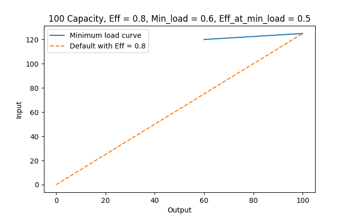
Next we will add ramp limits. With the ramping limits, the user can force the change of a flow from a unit to be below a certain value each timestep. The ramping is an attribute of the flow. Therefore it does not require the minimum load behaviour and its parameters are added to the unit_outputNode entity:
ramp_method: ramp_cost, ramp_limit or both. Only ramp limit is currently implemented (August 2023).ramp_speed_up: Limit on how fast the plant can ramp up. (fraction of unit / min) ie. Value 0.01 allows the change of 60% of capacity per hour.ramp_speed_down: Limit on how fast the plant can ramp down. (fraction of unit / min) ie. Value 0.01 allows the change of 60% of capacity per hour.ramp_cost: NOT YET IMPLEMENTED. The cost of ramping the capacity. [CUR/MW]
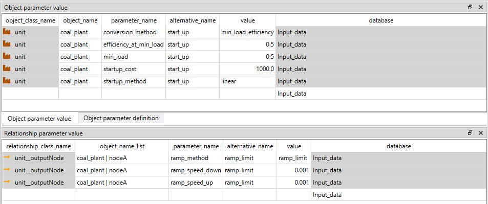
How to add minimum uptime and downtime
Some power plants cannot be started and stopped freely due to thermal stress, safety requirements, or operational constraints. Minimum uptime forces a unit to stay online for a specified duration after starting up. Minimum downtime forces a unit to stay offline for a specified duration after shutting down.
To add minimum uptime and/or downtime constraints to a unit:
-
Set the
minimum_time_methodparameter on the unit:- min_uptime - only enforce minimum uptime
- min_downtime - only enforce minimum downtime
- both - enforce both constraints
- none - no minimum time constraints (default)
-
Set the duration parameters (in hours):
min_uptime- e.g. 8 for an 8-hour minimum online timemin_downtime- e.g. 4 for a 4-hour minimum offline time
Setting minimum_time_method to anything other than none will automatically activate online variables for the unit (at least linear startup), even if startup_method is not explicitly defined. This means you do not need to separately set startup_method to linear or binary, although you can if you also want startup costs or binary commitment.
The minimum time constraints work with variable timestep durations. The constraint checks that the cumulative duration of consecutive online (or offline) timesteps meets the minimum requirement, rather than simply counting timesteps.
When using rolling window solves, ensure that the solve horizon overlap is at least as long as the longest min_uptime or min_downtime value. A warning will be issued if this condition is not met.
If the unit also has ramp limits (ramp_speed_up, ramp_speed_down), the model will additionally tighten the maximum output in the startup and pre-shutdown timesteps based on how fast the unit can ramp within one timestep. Without ramp limits, the unit can reach full output immediately after starting.
How to add CO2 emissions, costs and limits
(examples.sqlite scenario: coal_co2 ) init - west - coal - co2_price - co2_limit
Carbon dioxide emissions are added to FlexTool by associating relevant commodities (e.g. coal) with a co2_content parameter (CO2 content (tons per MWh) of energy contained in the fuel).
The other CO2 parameters are handeled through a group of nodes (Here coal_price or coal_limit groups). Therefore one needs to create a group and add all the nodes that supply these commodities (eg. coal_market) to a group with a group_node entity. (Here the entity co2_price--coal_market)
To set a price one needs to create set the co2_method parameter to price (constant) and create the co2_price parameter with the desired value. This price is added to the price of the commodity.
Alternatively one can set a limit on the co2 used by setting the co2_method parameter to period or total and setting the co2_max_period (periodic map [tCO2]) parameter or co2_max_total (constant [tCO2]) parameter.
There methods can be combined by setting the co2_method to price_period, price_total, period_total or price_period_total.
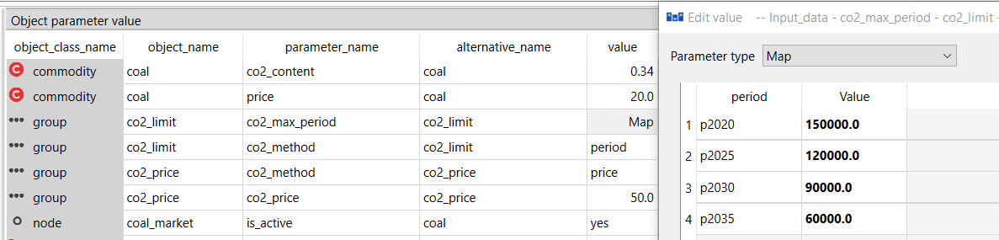
How to create a non-synchronous limit
(non_sync_and_curtailment.sqlite) (scenario: non_sync)
Non-synchronous limit is a property of a group of nodes. It states that the non-synchronous flow to the group of nodes cannot exceed a set share of the input flows at any timestep. To demonstrate this, we have set a system with a coal plant, a wind plant and a single demand node. However, it can be done to a group of nodes with unlimited number of plants or connections connected. So, one can limit the non-synchronous share of individual nodes or of the whole system. The flows between the nodes of the group are excluded.
The non-synchronous limit is set to a group of nodes with one or multiple members. Note: These are set to the group with group_node entity, not with group_node_unit entity!
Create a group (here nodeA_group) and set a group_node entity (nodeA_group |nodeA). Then add parameters:
has_non_synchronous: yesnon_synchronous_limit: 0.5penalty_non_synchronous: 4000
This forces the non-sync flow to be at max 50% of the incoming flow to the nodeA.
The penalty should be always set as in some cases there is no other way to keep the constraint feasible (and it will be difficult to find the reason why the model does not solve). The existence of the non-synchronous penalty in your results indicates that this constraint has been violated and you should investigate the reason for this in your system. If the penalty_non_synchronous is lower than the upward_penalty of the demand node, the system will prefer breaking the non-sync constraint instead of the node balance equation. In other words, it will not curtail the production of profile plants if the demand is not satisfied even though it will break the non-synchronous penalty. If it is higher, the curtailment will take place instead.
When having a connection to a storage from a node with this constraint, the best practice is to add this storage node to the group as well. This excludes the flows to and from the storage in the calculation of the non-synchronous ratio. However, if you want to have these flows in the calculation, you have two options depending on if you want the flow to be synchronous or not. If it is non-synchronous, just set the connection parameter is_DC: yes. If it is synchronous (e.g., some flywheels), an issue arises with the reqular connection as it now can reduce the ratio with equal simultaneous flow in both directions. To prevent the simultaneous flow to both directions you need to set the transfer_method: exact. This will increase the solving time significantly as it will use integer variables (so, better to add the storage node to the node group with a non-synchronous limit).
Then set which plants and connections are considered non-synchronous by adding parameters:
unit_outputNode:
- is_non_synchronous: yes
Connection_node_node:
- is_DC: yes
Here the (wind_plant|nodeA) relation has the is_non_synchronous parameter and battery connection is_DC parameter.
A connection with transfer_method: no_losses_no_variables between a node included in a group with a non-synchronous limit and a node outside of the group is not allowed. The flow in this kind of a connection is presented with a single variable, which would not function correctly with the non-synchronous limit constraints (there is a non-linearity at zero that requires two variables).
If you want summary metrics per flow in the results, create a separate flowGroup for each flow (or collection of flows) and add flowGroup__unit__node entities to it. The flowGroup needs the parameter:
flow_aggregator: standalone_aggregator_only
This emits the flow-group's own outputs (per-period cumulative_flow MWh and average_flow MW, plus a signed net-flow timewise series) for the members. It is summary output — for per-timestep decomposition of a node's flows, use print_dispatch on a group__node group instead (see "How to create aggregate outputs").
Here we have coal_flow flowGroup with flowGroup__unit__node relation coal_flow|coal_plant|nodeA
and wind_flow flowGroup with flowGroup__unit__node relation wind_flow|wind_plant|nodeA.
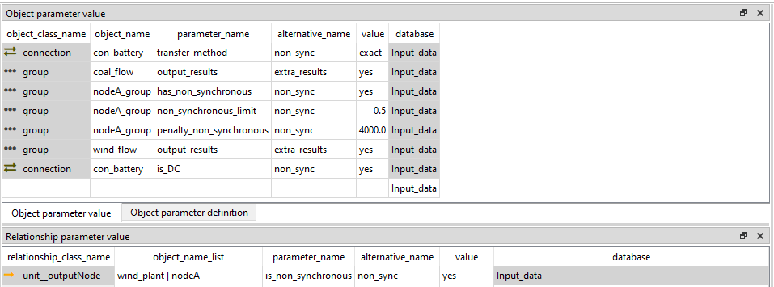
How to see the VRE curtailment and VRE share results for a node
(non_sync_and_curtailment.sqlite) (scenario: curtailment)
When the system has profile-units with the profile_method: upper_limit, the model can curtail the unit's flow to avoid penalties.
The curtailment could take place for several reasons:
- the supply is higher than the demand and the energy cannot be stored or transferred (further)
- non-synchronous limit
- extra flow constraints have been set
- other unit specific constraint affecting how VRE units or other units are forced to behave (ramp, start-up ...)
To see the curtailment results you need a group with group__node members (not a flowGroup with flowGroup__unit__node members!). The group then needs the parameter:
print_indicators: yes
This produces the node-group summary indicator metrics — loss-of-load share, VRE share, curtailment share, excess-load share and annualised inflow — written to the Results database as group: indicator and to Excel as the group_summary table. print_indicators is the "summary" output for node groups; pair it with print_dispatch if you also want the per-timestep decomposition of the same nodes.
These changes were done to the previous non-sync example database.
Note: The results are the share of curtailment in relation to the inflow (demand) so it can exceed 100% as seen in the figure.
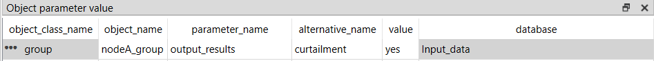
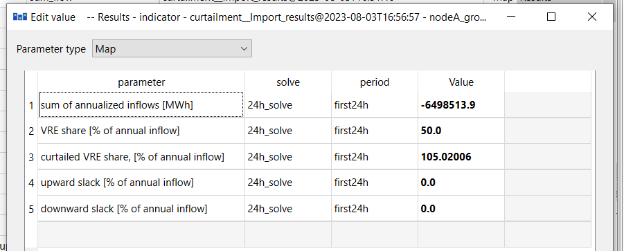
How to create a delay between two nodes
(examples.sqlite scenario: water_pump_delayed)
Sometimes a flow between two nodes needs to be delayed, for example water flow in river systems can take hours between two power plants. This can be approximated using delay parameter available for units (and unidirectional connections). Delay can be expressed using a constant value (hours) or as a weighted map of time delays (index: time delay in hours, value: weight). Each weight indicates its share of the original flow and the weights should sum to 1. Delay requires that the time resolutions in the model are always integer multiples of these time differences.
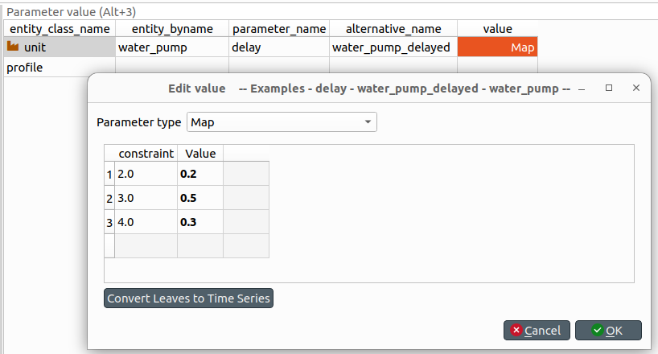
How to run solves in a sequence (investment + dispatch)
(examples.sqlite scenario: 5weeks_invest_fullYear_dispatch_coal_wind)
In this example, investment decisions are made using a five week sample of a year and then the dispatch is solved with the full year timeline using these investments.
To do this you need two solves:
- Investment solve
- Dispatch solve
Both solves should solve the same periods using different timeset to represent these periods. This example has only one period p2020 describing a year. The investment solve uses a representative sample timeset 5weeks to do the investment decisions. These are then passed to the dispatch solve that uses complete timeline fullYear.
Investment solve requires the parameters:
Invest_periods: Array of periods where investments can be maderealised_invest_periods: Array of periods that are output for investment decisionsperiod_timeset: Uses the 5weeks as the timeset
Note that the realized_invest_periods is used instead of realized_periods, because we want the investment solve to only output investments.
Additionally some of the units, connections or storages will need investment parameters (invest_cost, lifetime...) see How to make investments (storage/unit)
The dispatch solve requires the parameters:
realized_periods: Array of output periodsperiod_timeset: Uses the fullYear as the timeset
The sequence of solves is defined by the model parameter solves. Here it is an array where the first item is an investment_solve 5weeks_only_invest and the second is the dispatch solve y2020_fullYear_dispatch. This is enough for the model to know to pass the investment decisions of the period to the period of the same name in the second solve.
Note that the picture has two model: solves parameters defined one for each alternative. Only the parameter from the 5weeks_only_invest is used as the lower alternatives in the scenario tree override the values from the higher alternatives and only one model can be run.
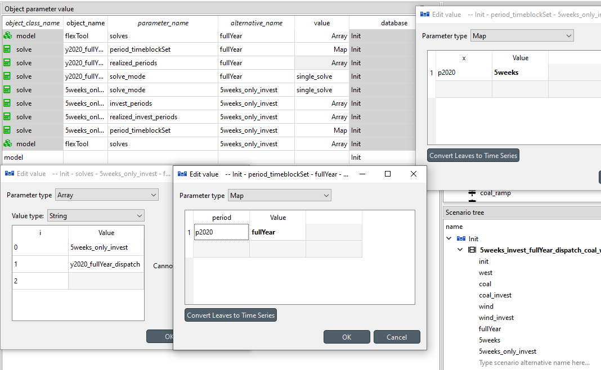
How to create a multi-year model
A multi-year model is constructed from multiple periods, each presenting one year. In the example case, each year is otherwise the same, but the demand is increasing in the west node. This means that all periods can use the same timeset 5weeks from the same timeline y2020, but one can also make separate timelines for each year, if data is available for this. The inflow time series are scaled to match the value in annual_flow that is mapped for each period. The model is using the inflow_method scale_to_annual in order to achieve this (default is use_original that would not perform scaling). There should also be an inflation_rate parameter set for the model entity flexTool if something else than the model default of 0 is to be used (set to expected inflation when inputs are in nominal terms).
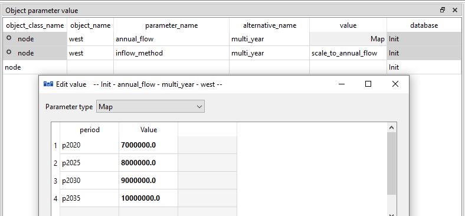
A multi-year model could be solved at one go (multi_year_one_solve) or by rolling through several solves (multi-year) where each solve has a foresight horizon and a realisation horizon. Next we will go through both options.
Multi year with one solve
(examples.sqlite scenario: multi_year_one_solve)
In this example, one solve is used for all the four periods. All the four periods need to be added to the solve arrays invest_periods and realized_periods. Here the same timeset is used for all the four periods, so only difference between them is the increasing inflow set above. The parameters that need to be added to the solve entity:
years_representedparameter is used by the model to calculate the discounting factors for the periods in the model (often future years). It should state the number of years each period will be representing. For example, a period for 2025 could represent the years 2025-2029 if itsyears_representedis set to 5. Any investments would be taking place at the start of 2025 and discounted to the beginning of 2025, but the operational costs would accrue from each year in 2025-2029 each with a different discounting factor (decreasing based on the interest rate).invest_periodsthe periods in which the model is allowed to make investments.realized_periodsthe periods that will be realized in this solve (outputs dispatch results for these periods).period_timesetdefines the set of representative 'periods' (timesets in FlexTool) to be used in each FlexToolperiod.
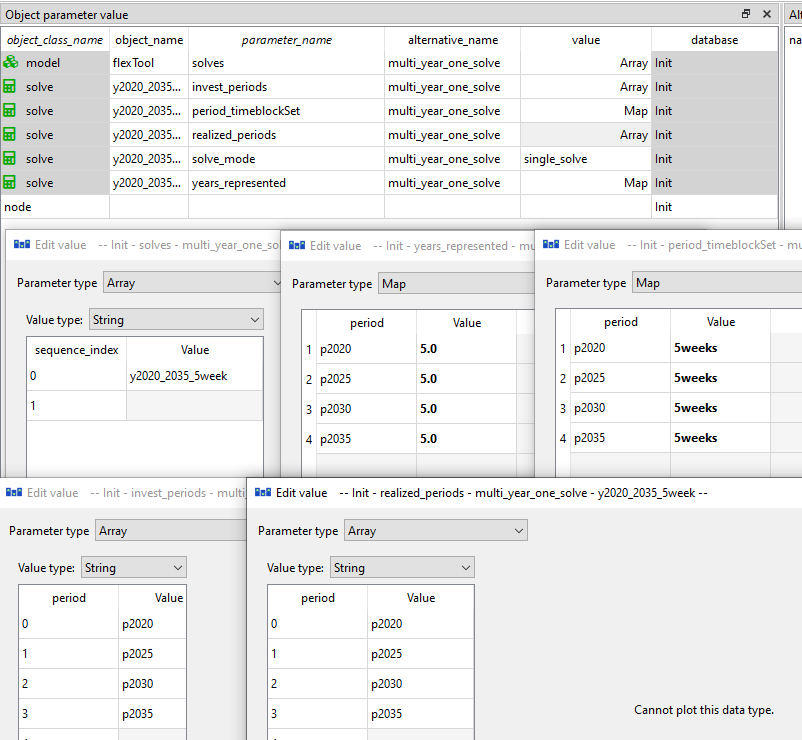
Multi year with rolling solves
(examples.sqlite scenario: multi_year)
If the solving time gets too big, there is an option to split the timeline into overlapping parts and solve them separately. This shortens the solving time as it increases exponentially as the model grows. Therefore, collection of smaller solves is faster. The drawback is that the accuracy will be affected if there are dependencies with a larger time interval than the split size.
When dealing with investments the splitting only works if the different periods are similar, in most cases complete years. If the first solve is really windy, it would invest too much on wind which wouldn't produce enough energy in later solves and then it would need to invest again to something else. It can also be challenging to consider lifetimes. If the option of retiring is allowed, it might retire something that is needed for later solves. In this example, the periods are complete years and the only difference between periods is increased demand.
The model rolls through several solves and therefore, the model entity flexTool has four values in the solves array. Each value represents one solve and it's position in the sequence of solves. The next figure illustrates the realization (blue) and foresight horizons (grey). The first solve will solve both the year 2020 and year 2025, but it will only output the year 2020. The next will solve both 2025 and 2030 but only output 2025.
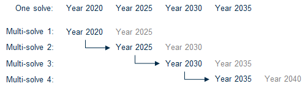
Next figure shows the values needed to define one solve (out of the four solves in the example). Each of these need to be repeated for each solve in the model.
years_representedparameter is used by the model to calculate the discounting factors for the periods in the model (often future years). It should state the number of years each period will be representing. For example, a period for 2025 could represent the years 2025-2029 if itsyears_representedis set to 5. Any investments would be taking place at the start of 2025 and discounted to the beginning of 2025, but the operational costs would accrue from each year in 2025-2029 each with a different discounting factor (decreasing based on the interest rate).invest_periodsthe periods in which the model is allowed to make investments. To be given for each solve.realized_periodsthe periods that will be realized in this solve (outputs dispatch results for these periods). To be given for each solve.invest_realized_periodsparameter states the periods that will realize the investment decisions. If not stated, it will userealized_periods.period_timesetdefines the set of representative 'periods' (timesets in FlexTool) to be used in each FlexToolperiod.
Note the the solve_mode: rolling_window is not used! This is not for investment runs (without nesting) as it rolls freely, and investments should only be made at the start of the period. This example is called 'manual rolling' later when those are discussed.
In the examples.sqlite, the solve entities can carry solver options in the solver_arguments map (e.g. solver, parallel and presolve for HiGHS). They only affect the speed and not the results, but usually the default values are good enough and the user should only change them if they understand how the solvers work.
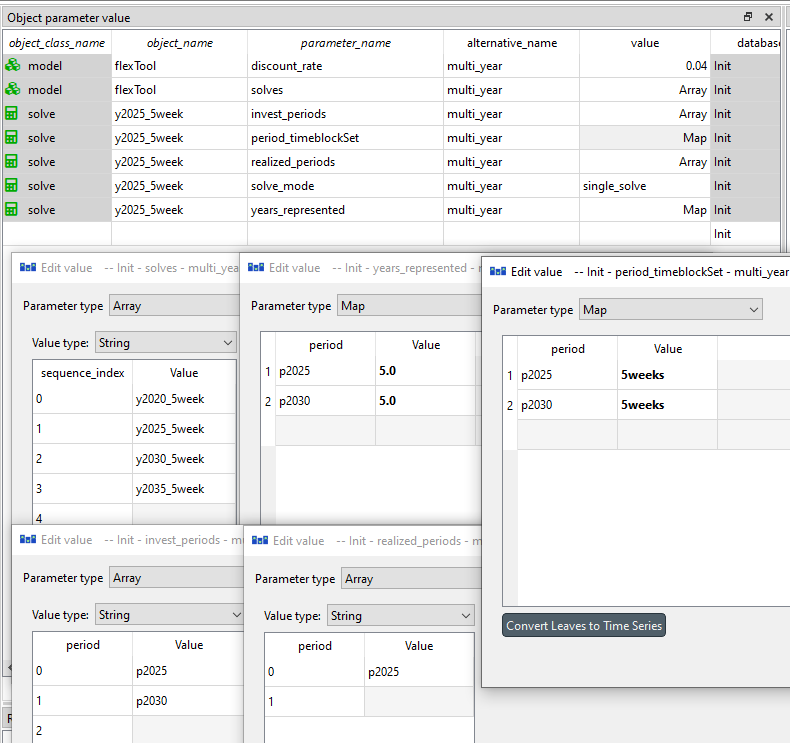
How to use a rolling window for a dispatch model
A rolling window can be used for example when a dispatch model gets too big to be solved on one go. It splits the problem into multiple consecutive smaller problems.
The rolling window solve splits the time dimension into overlapping parts and solves each one of them separately but in a sequence (and can therefore pass state information from the previous solve to the next one). For example, instead of a solving the full year in one go, you can split the year into six four-month long solves where each solve outputs only the first two months. The solves would therefore include the months:
- Roll: Solve months -> Output months
- 1: [1,2,3,4] -> [1,2]
- 2: [3,4,5,6] -> [3,4]
- 3: [5,6,7,8] -> [5,6]
- 4: [7,8,9,10] -> [7,8]
- 5: [9,10,11,12] ->[9,10]
- 6: [11,12] -> [11,12]
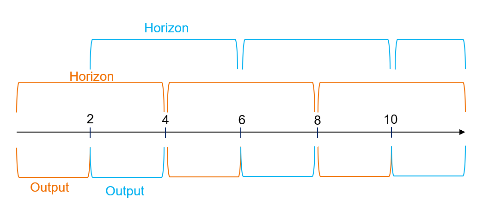
The rolling solve could be setup also manually as described in the 'How to run a multi year model' - just using shorter periods.
However, this would be tedious if there are many solves. In a rolling window model, the user can set the rolling_jump and rolling_horizon parameters, which are expressed in hours.
-
rolling_horizon: sets the length of the whole solve, in hours. In previous example 4 months (2880 hours). Horizon allows the model to see bit further in the future to improve the decision making for the period that will be output. -
rolling_jump: sets the interval for the length of each 'jump' the model takes forward in reach roll. It is then both the interval of roll starting points and the length of the output for each roll. Therolling_jumpmust be smaller than therolling_horizon. In the previous example therolling_jumpwould be 2 months (1440 hours).
In addition, the user can set the duration for how long the model will roll:
rolling_duration: Optional (hours), the length of combined rolls. In the example, it could be set to 8640 hours which would divide evenly, or 8760 hours which means that the last roll will be shorter than the others. It is nicer to userolling_jumpthat is divisable with therolling_durationto keep rolls even. Ifrolling_durationis not set, it defaults to rolling through the whole timeline.
When using rolling window solve, you are solving the model with less information. Therefore, the results will be less optimal since the model will not have the full information at once. It is therefore important to know how this could affect the results and what things to consider when implementing a rolling window model. It will have an impact on time dependant parts of the model: for example, storages or cumulative flow constraints. If the model can see only a few months to the future, it can't see how much energy needs to be stored after that.
Investments should not be used with this free rolling solve (solve_mode: rolling_window) as investments should only be done at the start of the periods. Both the long-term storage and the investments can be taken into account with nested rolling solves that have a separate how-to.
Short term storages also are operated less optimally in a rolling window model. There is a positive side to this as well, since perfect foresight linear optimization models are 'too optimal'. They don't reflect the forecast errors present in real life. So, a rolling window model might operate a bit more realistically than a single_solve model. A single_solve model can consider things happening far in the future when setting the storage level at present, even though in reality that information is not available. So, the total cost of a rolling_window model should always be higher than the total cost from a complete single_solve model that has perfect information.
To set a dispatch rolling window model you need to set the entity solve parameters:
solve_mode: rolling_windowrolling_jump: Hours, the desired length of the solve intervalrolling_horizon: Hours, the desired length of each roll solverolling_duration: (Optional) Hours, the length of the combined outputs. If not set, the whole timeline is used.
Considerations on the rolling times:
- The
rolling_jumpandrolling_horizonmust be large enough to make the model faster. If too small intervals are used, the creation of solves and moving data from solve to another might take too much time. - If you are not using 1-hour timesteps, preferably use multiples of the timestep you are using as the
rolling_jumpandrolling_horizon. The steps included in each solve are calculated by summing the step durations until they are larger or equal to the hours given. So, if multiples are not used, the rolls might not be exactly the same size. - The model can roll over timeset and period jumps, which might cause some issues if storage constraints are used. Using timeset length or its multiples is therefore recommended. For example, the
rolling_jumpcould be a half of a timeset and therolling_horizonwhole timeset orrolling_jumpa timeset androlling_horizonthree timesets. Of course, when running e.g. a full year dispatch, there is only one timeset of 8760 hours, which makes the choices more simple.
Considerations on storage parameters:
storage_solve_horizon_methoduse_reference_value or use_reference_price are the preferred means to bind storage values. They can be used together with thestorage_state_start_end_method: start, which would then set the initial storage state. These methods bind either the storage value or the storage price at the end of horizon (not the end of jump). This allows the storage to use the part of the horizon that is not output to improve the behaviour of the storage in the part that is output (as defined byrolling_horizonandrolling_jump).bind_within_timeblockdoes not work correctly if the rolls don't include whole timeblocks. Instead, it will bind the first step of the roll (whatever it is) to the end of the timeblock. Do not use in nested solves if you are not using whole timeblocks or its multiples asrolling_jump- the same applies to the
bind_within_period(but in relation to periods - do not use this unless you arerolling_jumpis as long as a period or its multiples). storage_start_end_methodcan be used to set the first timestep of the first roll and/or the last timestep of the last roll (in conjunction withstorage_state_startandstorage_state_end).bind_within_solvebinds the start state to the end state of each roll not the start and end of the whole model timeline. Use with caution (and probably best not to use together withstorage_solve_horizon_methoduse_reference_value).
How to use Nested Rolling window solves (investments and long-term storage)
The basic rolling solve can have problems in dealing with long term storage and with investments. If the model only sees a few weeks to the future, it really can't see how much energy should be stored in long term storages. Problems with investments can also be serious: If the first roll is really windy, the model would overinvest in wind power that is not profitable in the later rolls. Similarly, if the model is allowed to retire capacity, it might retire something that is actually needed in the later rolls.
Nested solve sequences can first solve the investments and long-term storage levels and pass them to the dispatch solve. Both storage solve and dispatch solve can be rolling solves. The dispatch solves can then send the end storage values to the investment and long-term storage solves as start values to reduce the error of these solves.
When to use nested solves?
- Dispatch model is taking too long to solve, but simple rolling window solve would not represent the long-term storages correctly. (Nesting without the investment solve)
- Investment model takes too long to solve, even with manual rolling How to create a multi-year model. With nesting you can have smaller rolls for dispatch solve than the investment solve. (Nesting without the storage solve)
- Investment model takes too long and you have long term storages to consider. (Three level nesting, graph below)
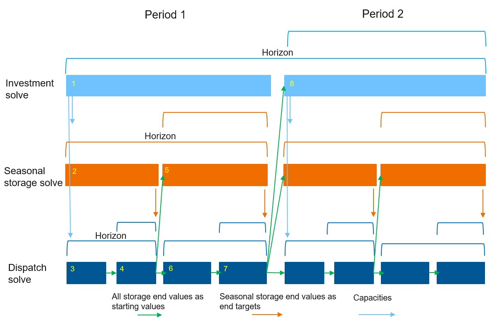
However, the obvious issue is that investment and storage solves cannot be solved using the old complete solve as it wouldn't make the solve time any shorter. Therefore, we need to decrease the information for investment and storage solves as well. There are a few options for this:
- Use lower resolution (longer timesteps). This can work quite well for a long-term storage.
- Use representative periods from the full timeline when performing investments. There is a large body of literature and methods on how to pick the representative weeks.
- Split the investment timeline (myopic investments) by manually creating a solve sequence for the investment solves like in: How to create a multi-year model section. This can be combined with the first or second option.
Each of these have their pros and cons:
- Using the lower resolution can speed-up the model considerably, but it also means that everything that happens faster than the new timestep duration will be lost as the timestep varying parameters are averaged or summed for the new timestep. For example, consider a model with investment options to solar and storage. If the step duration is changed to 24 hours, the model won't invest in enough storage to mitigate the diurnal variation in PV. When these investments are then passed to the dispatch solve, the invested portfolio will have trouble meeting the demand.
- Using the sample can be effective if the sample is chosen well, but all the needs that are not in these samples are not included. The speed is heavily dependent on the number and size of those samples.
- Splitting the investment timeline for multi-year models can be seen as a relatively realistic approach, since investment decisions would have a lot of uncertainty in the longer time frame anyway.
The investment decisions with less information are always less optimal than with complete solves. Therefore, when they are passed to the dispatch solve, it will in some cases cause penalties in the results when the invested portfolio is not sufficient to meet the demand at all times.
The long term storage solve can be implemented using a lower resolution solve. The storage state behaviour from the storage solve is used as a target for the dispatch solve. There are three options for doing this: - fix_quantity creates a constraint that forces the end storage state to be the same as in the storage solve at this timestep. - fix_usage does the same but not taking into account the inflow or slacks. Forces the summed usage of the storage during the dispatch solve to be the same as during the same time span in the storage solve. This avoids infeasibilities when modelling inflow stochastics in comparison to the fix_quantity. - fix_price takes the dual marginal price from the storage solve at the end timestep of the dispatch solve and uses it in the objective function to give a value to the stored energy at the end of the horizon.
The rolling_jump and rolling_horizon in the storage solve have to be longer than in the dispatch solve. You can set which storages are included as "long term storages" whose value will be transferred to the dispatch solve.
To create a nested solve sequence, you need two or three solve entities. Either the investment solve or the storage solve can be left out. When using nested solve sequence, the sequence is not set with the model: solves parameter. Only the topmost solve is put there. Instead, the nested levels are set by the solve parameter contains_solve: solve_name. The investment solve is always on the top followed by the storage solve and dispatch solve:
- investment_solve
solveparametercontains_solve: storage_solve_name - storage_solve
solveparametercontains_solve: dispatch_solve_name
To create a storage solve:
solveparameterfix_storage_period: Array of periods where the storage values are fixed in the lower solve. Should be the same asrealized_periodsfor the dispatch solve.nodeparameterstorage_nested_fix_method: fix_quantity, fix_price or fix_usage
To create an investment_solve:
solveparameterinvest_periods: Array of periods where the model can invest.solveparameterrealized_invest_periods: Array of periods where the model will realize investment decisions to the lower solves and results.solveparameterrealized_periods: Should not be used in this solve! You don't want the dispatch results from this solve, but from the dispatch solve.
In addition, the rolling dispatch solve should be created as in the How to use rolling window solve for dispatch. To set a dispatch rolling window model you need to set the entity solve parameters:
solve_mode: rolling_windowrolling_jump: Hours, the desired length of the solve intervalrolling_horizon: Hours, the desired length of each roll solverolling_duration: (Optional) Hours, the length of the combined outputs. If not set, the whole timeline is used.realized_periods: Array of periods that are realized
The other model parameters apply to all of the solves. Therefore, the considerations of the storage value binding that were discussed in the How to use a rolling window for a dispatch model should be taken into account here as well.
- Storage levels can be fixed with
storage_solve_horizon_method: use_reference_value or use_reference_price, these will fix the end of each horizon not each jump. storage_start_end_methodfixes the starts and/or ends of each solve level, meaning the first step of the first roll and the last step of the last roll.- In most cases the
bind_storage_methodshould be left as bind_forward_only - Do not use
bind_within_timeblockif you are not using full timeblock or its multiples as therolling_jumpin the dispatch model, otherwise you might cause an infeasible problem. - Do not use
bind_within_periodif you are not using full periods or its multiples as therolling_jumpin the dispatch model, otherwise you might cause an infeasible problem. - Do not use
bind_within_solve
The recommended storage parameters with nested solves are:
- storage_start_end_method: fix_start
- storage_solve_horizon_method: fix_quantity
- storage_state_start and storage_state_reference_value: use the same value
This way the start and end states of the system are the same. Each end of the horizon (not the output) has that value as well, which keeps the model from emptying the storages at the end of the roll. In the dispatch solve, the fixed storage value from the storage solve overrides the horizon end value if a conflict exist.
How to create the three lower information solve types for investment and storage solves discussed above?
To create a lower resolution (longer timesteps) solve:
- Make a new
timeset, but use the sametimelineandtimeset_durationfor it as with the high resolution solve - In the
solveuse this newtimesetin theperiod_timeset - Set
solveparameternew_stepduration: Hours
The model will create a new timeline for this solve with the new_stepduration. All the timestep map data like inflow or profile will be either summed or averaged for the new timeline. Again, the new_stepduration should be multiple of the old step duration. If the timeset_duration is not a multiple of the new_stepduration the last timestep will be shorter than the rest.
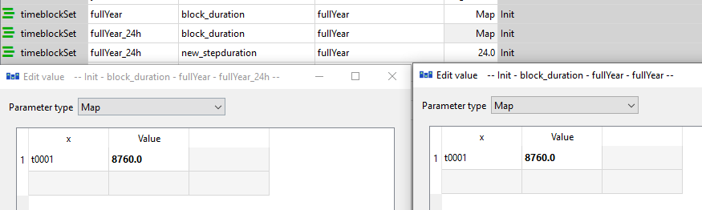
Note that if the last timestep of the dispatch horizon is not in the storage solve timeline, it will use the last available timestep to fix the storage. This can happen at the end of the timeline when the dispatch solve with a lower step size can fit an extra step after the last time step of the storage solve.
Other reason might be that both dispatch and storage solves are aggregated with the new_stepduration. In that case, it is usually best to use values for the new_stepduration that are dividable.
To create a sample solve with representative periods:
The tutorial contains an example of representaive periods under alternative 5weeks where the year is represented with five sample weeks. It is done with the timeset parameter timeset_duration where instead of choosing the whole timeline by setting the first timestep and the duration of whole timeline, you choose multiple starting points with smaller durations. The example for the 5weeks is below.
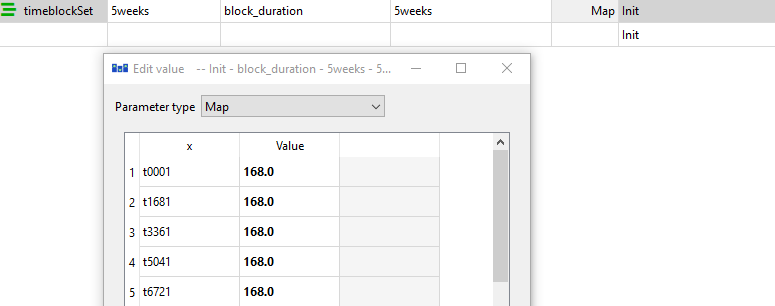
To create an investment solve sequence, you have two options:
- Create manually a series of solves and set the
invest_periodsandrealized_invest_periodsindividually for the solves. How to create a multi-year model has an example of this with the difference that here you userealized_invest_periodsinstead ofrealized_periodsand that each of the higher level solves requires thecontains_solveparameter.
If you have many splits, this option can get tedious and prone to mistakes.
The other option is to use only one investment solve entity:
- The
invest_periodsandrealized_invest_periodsshould then be set with a 2D map where the first column tells the solve (you don't have to create separatesolveentities for these) and the second column tells the period. To get a 2D map, choose the parameter type as Map and then right click the table and choose Insert column after/before. The value column does not matter. The model will generate these solves, with the periods given. Note that the solve names should match in both 2D-maps.
You can use the same lower level solve with each the investment solves as the lower level solves will exclude the periods that are not included in either of the upper level realized periods: realized_invest_periods or fix_storage_periods. So, the lower level solve should have all the periods that it is used for in any the solves.
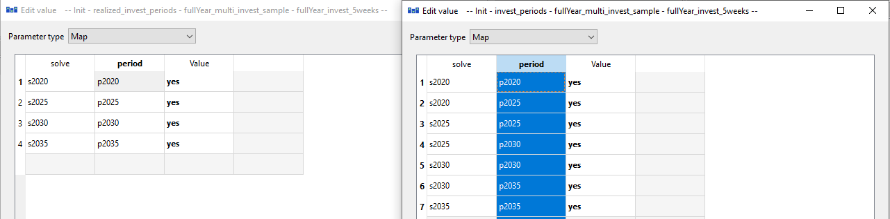
Note that the results of a nested rolling solve run are not fully optimal, because the information in the model is decreased. This is the price you pay for the speed. Therefore, the results should not be taken as they are, instead it is important to know how to interpret the results: What phenomena are missing? How will they affect the results? Where should extra investments go to satisfy the demand (there is a possibility to use the capacity_margin method to force extra investments)?
In the examples.sqlite there are four example scenarios related to this:
- multi_fullYear_battery: The four period full year single solve, with coal, wind, battery storage with unlimited investment possibilities. Running this is still possible but takes a few minutes. This is here as a reference for the nested solves.
- multi_fullYear_battery_nested_24h_invest_one_solve: This has the nested structure and the investment solve is done with 24h timesteps and storage solve 6h timesteps.
- multi_fullYear_battery_nested_sample_invest_one_solve: This has the investment solve as 5weeks sample but all the four periods are included in the same investment solve. Nested structure with 6h storage solve timesteps.
- multi_fullYear_battery_nested_multi_invest: This has split the investment to four solves with each having two period 5weeks sample period horizon. Nested structure with 6h storage solve timesteps.
The 24h timestep is clearly too long as it invests too little for storage and coal. A large upward penalty ensues.
The sample one solve invest also invests too little, as the largest demand-supply ratio weeks are not in the five week sample. However, the investments are spread more accurately.
The split sample investment run produces in this case similar results as the one solve sample run. This is not always the case! Here the only difference between the periods was linearly increased demand.
How to force-include adequacy-critical weeks in representative-period selection
When a nested solve builds its investment stage on representative periods (see How to use Nested Rolling window solves), those periods are picked by greedy convex-hull clustering, which optimises a whole-year approximation of the shape of the profiles and inflows. A sustained low-VRE / high-demand stress week can have an unremarkable within-period shape and so never get selected — the investment stage then never sees that week as a hard balance constraint and under-builds. Force-include fixes the representation: it injects the worst base period under an explicit net-load signal so the stress week becomes a hard row in the invest LP. This is complementary to the energy-margin lever below — force-include corrects which weeks the invest stage sees, whereas the energy margin applies a deliberate margin on top of whatever weeks are chosen.
The selection runs from the command line:
python -m flextool.representative_periods.preprocess <db_url> <scenario> <n_rp> <period_length> [options]
The force-include options (all off by default):
--force-highest-net-load— force-include the base period with the greatest sustained net load (Flag B, energy-adequacy — the main fix; rewards a whole low-VRE / high-demand week rather than one spiky hour).--force-peak-load— force-include the base period with the highest instantaneous net load (Flag A, capacity-adequacy; noisier for energy-constrained systems).--force-window N— sub-window length in timesteps for the sustained score (default: the whole period).--vg-weight W— convex blend in [0,1] between the VG-shortfall term and the inflow-demand term of the net-load signal; the inflow term gets1 - W(default 0.5).--region-groups G1,G2,…— opt-in node-group demand-weighting of the VG term (see below).
The VG-shortfall term of the net-load signal has two weighting modes. By default it is the unweighted, system-coincident mean shortfall over all profile series — best for a simple system or when no node-group information is available. With --region-groups G1,G2,… each region's VG shortfall is instead weighted by that region's demand D_r, so a coincident trough in the high-demand regions dominates the selection. The mapping is derived structurally — profile→node via unit__node__profile, node→region via group__node membership, and D_r = Σ|scalar demand| over the region's member nodes — with no name conventions. Each named region group must therefore contain BOTH the VG (profile) nodes and the demand nodes of that region.
For example, on the H2_trade model:
python -m flextool.representative_periods.preprocess <db_url> y2050_rp 5 168 --force-highest-net-load --region-groups decomp_AUS,decomp_JAP,decomp_KOR
forces the low-VRE week starting 2050-10-15 (base period 41), which the unseeded hull ({3, 8, 14, 22, 49}) misses entirely, and the timeset is written as hull_5rp_168h+f1. Without --region-groups on this multi-region trade model the top-scoring week happens to already be a hull pick, so the timeset name is unchanged — a documented limitation of the unweighted signal on such systems; use --region-groups there.
Forced periods seed the greedy hull: they are guaranteed into the set as its initial vertices, and the clustering then fills the remaining slots to complement them (never re-selecting a period a forced extreme already represents). The total stays pinned at n_rp — a forced period consumes one of the n_rp slots, it never grows the set beyond n_rp. The +f{n} suffix counts the forced periods that displaced a clustered pick (i.e. that the unseeded hull would not have selected). With no --force-* flag the run is byte-identical to the pure-hull selection and keeps the plain hull_{n_rp}rp_{period_length}h timeset name, so force-include never overwrites the pure-hull timeset.
How to cluster representative periods on net load
By default the greedy hull clusters on the shape of every normalized profile and inflow series. --netload-clustering instead clusters on a real-MW net-load signal — demand minus available VRE — so the selected periods are the ones the net demand actually stresses rather than the ones with the most distinctive individual profile shapes:
python -m flextool.representative_periods.preprocess <db_url> <scenario> <n_rp> <period_length> --netload-clustering [--vre-penetration P]
--netload-clustering— cluster ondemand − Σ VRE·availability. VRE is any generation unit whoseunit__node__profilearc usesprofile_method = upper_limit(the default). The iteration-0 VRE fleet is sized by a demand-match default (each aggregation unit's investable VRE is grown until its energy plus existing VRE energy covers the unit's demand energy). The timeset is written asnetload_{n_rp}rp_{period_length}h.--vre-penetration P— scale the demand-match energy-share target (1.0= full-energy match; default1.0). Ignored without--netload-clustering.
Per-group vs per-node granularity. Set the group.use_for_representative_periods (yes_no) flag to yes on one or more region groups to sum each flagged group's member-node net load into a single regional signal; when no group carries the flag, each node is clustered as its own net-load signal.
Iterating on solved capacities. The single-shot mode above sizes VRE with the demand-match default. To instead feed a solve's realised investments back into the selection, use the iteration driver, which reselects and re-solves until the representative set stabilises:
python -m flextool.representative_periods.netload_iterate <db_url> <scenario> --n-rp 5 --period-length 168 --iterations 3 [--keep-best]
Each iteration runs an invest-only solve and feeds its invested capacities into the next net-load selection; the loop stops early once the selected set stops changing. --keep-best additionally dispatches each mature iteration over the full year and keeps the representative set with the lowest full-year cost. Run ... netload_iterate --help for the full flag list (--invest-solves, --dispatch-solves, --vre-penetration, --work-dir, --output-location, --alternative-name, --warm-start).
How to add an energy margin for investment adequacy
In a nested solve the investment stage is optimised over representative periods and the full-year dispatch is solved separately. The representative periods can be systematically optimistic about variable-renewable (VRE) availability: their average VRE availability tends to exceed the true annual average. The investment stage then under-builds, and the full-year dispatch has to cover the shortfall with large forced unserved-energy (upward-slack) penalties.
The energy-margin lever lets you de-rate a node's energy balance in the investment stage so that it builds enough capacity to meet the true demand under the true (lower) annual VRE availability. It is set per node with a method and one of two value parameters:
energy_margin_method- none (default, off), inflow_multiplier, or inflow_adder.energy_margin_multiplier- the factor (default 1.0). Whenenergy_margin_method = inflow_multiplier, the node's demand (inflow) is multiplied by this factor in the investment solve only — the dispatch solves always see the true demand. A value of 1.1 makes the investment stage build for about 10% more demand, so the real capacity is enough to meet the real demand under the true annual VRE. A value of 1.0 has no effect.energy_margin_adder- the extra demand in MWh (default 0.0). Whenenergy_margin_method = inflow_adder, this many MWh of extra demand (negative inflow) is added at the node in the investment solve only; the dispatch solves always see the true demand. A value of 0.0 has no effect.
For example, to build about 10% more into a demand node, set energy_margin_method = inflow_multiplier and energy_margin_multiplier = 1.1 on that node.
Use inflow_adder as the additive alternative to the multiplier. Because the multiplier scales the node's existing demand, it is a no-op on a node whose native inflow is zero — a common shape for a bare adequacy / slack node that carries no demand series of its own. inflow_adder instead adds a fixed block of demand at the node: it deepens the node's demand where it already has inflow and, crucially, creates the demand where the node had none, spreading the MWh uniformly across every investment-stage timestep (a constant adder), or placing per-period values if authored as a period map. Set energy_margin_method = inflow_adder and energy_margin_adder = <MWh> on the node to raise investment-stage adequacy headroom without touching dispatch demand.
The energy margin is a per-node lever for regions whose adequacy gap is driven by VRE optimism and can be closed by building more of an investable response (more VRE, storage, or imports). It cannot help a region whose VRE collapses to near zero during the stress period when the only investable response is more VRE that serves the same demand — those regions need firm capacity or imports instead.
It is complementary to the capacity_margin_method (see the group reference): capacity_margin_method targets peak-capacity adequacy (headroom above the peak net load), whereas the energy margin targets sustained-energy adequacy across the year.
Peak memory in long rolling and nested chains
The cascade keeps several solves' worth of state alive in RAM at once — the just-solved LP, the warm-start shell for the next roll, and the parked Provider state from earlier sub-solves. On continental-scale rolling or nested chains this can push peak RSS into the 10-30 GB range. Two CLI knobs help when peak RSS is the bottleneck rather than wall time:
--save-memory(orFLEXTOOL_SAVE_MEMORY=1) — after each LP is built, drops polar-high's polars/numpy LP source, writes the LP to a temp MPS file, and solves it in a separate HiGHS subprocess (viacmd_solve_mps) so the solver's working set lives outside the FlexTool address space. Frees ~5–10 GB on large models at a cost of ~+90 s I/O per sub-solve. Also disables warm-LP reuse, so every sub-solve cold-rebuilds. Use when the machine OOMs, not as a default.--presolve off— HiGHS' presolve is the largest single contributor to peak RSS on highly-structured LPs (continental power grids, dense capacity-expansion). Turning it off slows the solve but can free several GB. Pair with--save-memoryfor the largest savings.
Both flags are documented in Terminal / CLI. The FlexTool GUI's side menu has a Save memory checkbox that passes --save-memory through to each scenario run.
How to use stochastics (representing uncertainty)
(stochastics.sqlite)
Stochastics are used to represent the uncertainty of the future in the decision making. The main idea is to represent the distribution of possible futures by discrete scenarios (branches). These are all connected to the same starting point with the realized branch. A non-anticipatory constraint forces the branches to share the decisions that affect multiple timesteps with the realized branch during the realized part of the horizon. These decisions are investments, storage usage and online status of units. The model then optimizes the system to get the minimize the total cost all the branches (weighted by their probability). Only the realized timeline of the realized branch, will be output. The realized branch can continue to the end of the horizon (and be also a forecast) or just to the end of the realized part as in the picture.
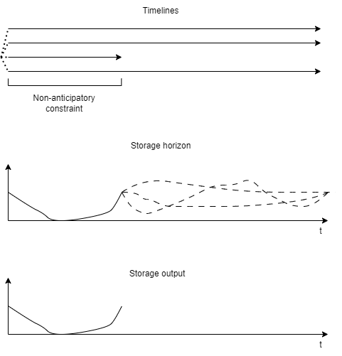
For the stochastics to have an effect on the results, the system needs parameters that change between the stochastic branches. These could be e.g. wind power generation or fuel prices. The model will then have separate variables in every branch for all the decision the model can take (e.g. invesment, storage state, online, flow). As a consequence, the realization phase will also be dependent on the things that happen in the stochastic branches - weighted by the probablity given to each branch. Only one period investment stochastic models are supported currently.
In this example, we show two ways to use stochastics: Single solve, rolling horizon. They all share the same test system that includes:
- A demand node
- Coal, gas and wind power plants
- Hydro power plant with a reservoir and a downriver nodes
The demand and the downriver nodes have a constant negative inflow. Therefore, the hydro plant capacity is partly in use at all times. The varying timeseries are the wind profile and the water inflow the reservoir. The coal commodity is more expensive than the gas, so the system will try to use the reservoir water to minimize the usage of coal. This will be affected by the forecast of the wind and the forecast of the water inflow. These are the stochastic timeseries in these examples.
You can have stochastics in multiple timeseries in the same solve, but these will have to share the branches. This means that for example if you have two wind plants with two different stochastic wind profiles with three branches (upper, mid and lower estimates) you need to think if it is best to use only three branches and put both of the upper estimates to the same 'upper' branch or should you use combinatorics to make nine branches. However, note that the tool will not do the combinatorics for you and the solving time will be heavily affected by extra branches. Consequently, the usual practice is to present all the stochastics using just e.g. three branches and consider the correlations between the stochastic parameters in the pre-processing of the input data.
Notes about the storage options with stochastics:
-
The best options to use are:
-
Storage_state_start_end_method: fix_start or fix_start_end (and the their values) -
storage_solve_horizon_method: fix_value or fix_price (and their values) -
Do not use any of the
storage_binding_methods, they do not work correctly with stochastics (there is no unambigious end state that could circle back to the first time step).
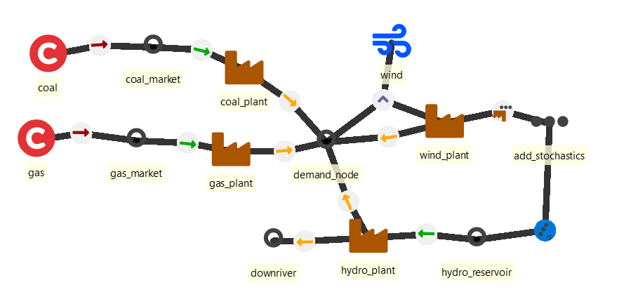
Single solve stochastics
(stochastics.sqlite scenario: 2_day_stochastic_dispatch)
In this scenario, 24 hours are realized with an uncertain forecast for the next day. The timeset length is therefore 48 hours and the branching will happen at the timestep t0025. To set up a stochastic solve, we need three things: The stochastic branch information, the stochastic timeseries and choosing which parts of the model use stochastic timeseries.
The information about the branches are set with the solve parameter stochastic_branches. This is a 4 dimensional map. (Edit -> choose map -> right click -> add columns).
The columns are: period, branch, analysis_time (starting time of the branch), realized (yes/no) and the value is the weight of the branch. Each starting time, including the first timestep, should have one and only one realized branch. This realized branch is used for the non-stochastic parts of the model with a stochastic timeseries. In this example we have three branches: mid, upper and lower representing the three wind forecasts. The weight will influence the relative weight of each branch in the objective function (model costs). The weights are normalized, so that the total weight is always one in each timestep.
The stochastic wind timeseries are set with the same profile parameter profile but with a three dimensional map instead of the regular one dimesional map. The tool recognizes a stochastic timeseries from the dimensions of the data. The three dimensions are: branch, analysis_time and time. Here the realized part of the model (t0001-t0024) uses also the branch 'mid', which is one of the forecast branches as well. In the stochastic part, 'mid' is also set to be 'realized'. It is not actually realized (since the stochastic part is not realized), but it helps the model to choose which branch to use when there is no stochastic data available.
The parts of the model that will use stochastic data is chosen with a group parameter include_stochastics. The units, nodes and connections that are added to this group use stochastic timeseries connected to them (if available). Here we add the unit wind_plant to this group. There is a possiblity that to have two wind plants with the same profile, but use the stochastics on only one of them. The other would then use only the realized branch.
An option exists to output the stochastic horizons for debugging your system. This is done with the model parameter output_horizon. It will cause errors in the calculation of the cost in each solve (the costs of the unrealized branches will be included) so turn it off when you want the final results.
If you change the weights of the stochastic branches, you should see the results change.
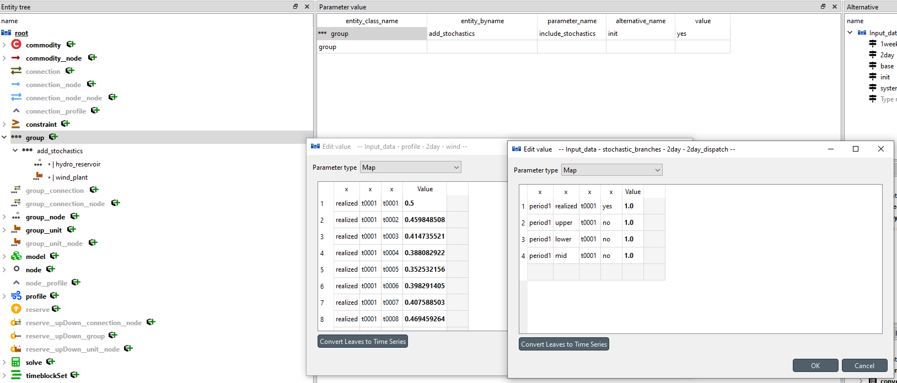
Rolling horizon stochastics
(stochastics.sqlite scenario: 1_week_rolling_wind)
In this scenario we extend the previous timeline to one week and roll through it one day at a time with additional three day stochastic horizon:
solve: rolling_solve_jump = 24 and rolling_solve_horizon = 96.
The stochastic data should be given so that it can serve the rolling structure: rolling_solve_jump dictates the duration of the realized part of each solve and the interval of forecast updates. So, for every 'analysis_time' there needs to be a time series in each stochastic branch that extends to the end of horizon (as defined by rolling_solve_horizon). The branches continue to the end of the horizon without branching again. The realized scenario should not typically be used as a forecast branch in a stochastic model. This is why its horizon is shorter than the others.
For the solve parameter stochastic_branches this means analysis times (t0001, t0025, t0049, t0073, t0097, t0121 and t0145)
Otherwise there is no difference to the previous example.
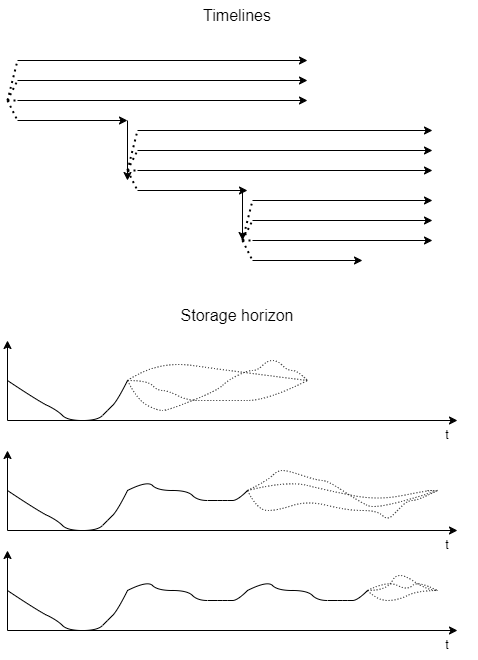
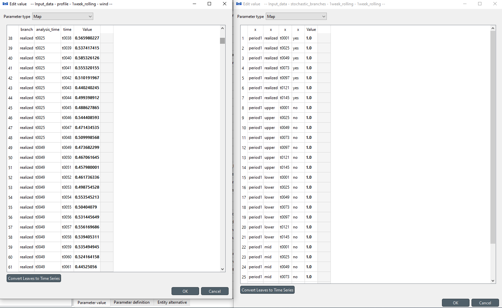
How to use CPLEX as the solver
CPLEX remains wireable as an advanced option for licensed users. Using CPLEX requires that you have installed the software, have a licence for it and have added it to PATH or to the environment where you are using the FlexTool, so that the tool can find the solver.
CPLEX is invoked via the solve parameter solver. FlexTool now builds the LP in memory through polars + polar-high, so the on-disk MPS handoff that previous versions used is no longer the default flow — the CPLEX path passes the problem to the Interactive Optimizer and produces two additional files in the work directory: a CPLEX log file and the solution file in CPLEX format.
Additional parameters:
solver_precommandcreates a text in front of the cplex call. This is useful when dealing with floating licences. The command allows to call the licence server to reserve the licence for the duration of the cplex program with a command line argument.solver_argumentsis an array containing additional CPLEX solver commands
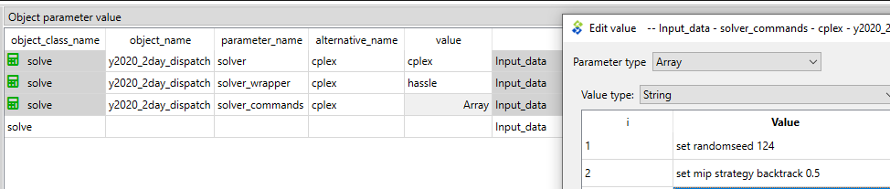
How to create aggregate outputs
It is often desirable to output results that focus on particular aspects of the model. For example, you may want all flows going in and out of all electricity nodes, without the corresponding flows for other energy carriers (e.g. fuels used to produce the electricity). And if the model is large, some of those flows are easier to read when aggregated into a single column.
FlexTool splits these two concerns across a node group and a separate flowGroup:
| Intent | Set this | Role | Members |
|---|---|---|---|
| Pick a set of nodes and get a per-timestep decomposition of every flow crossing them (one column per contributing process/connection) | print_dispatch: yes on group |
the decomposition — produces group_flow_t |
group__node |
| Re-bucket a set of flows so they appear as a single aggregated band inside that dispatch output | flow_aggregator: dispatch_plots_only on flowGroup |
a dispatch-band re-bucketer — no output on its own | flowGroup__unit__node or flowGroup__connection__node |
Together they work like this: print_dispatch builds the dispatch table for its node group; while doing so it inspects every flow touching those nodes, and if any of those flows are in a flowGroup whose flow_aggregator is dispatch_plots_only (or both), their columns are collapsed into a single band named after the flowGroup. A dispatch_plots_only flowGroup produces no output of its own — it only reshapes a dispatch table that a node group is producing.
Avoid double-counting. If the same flow arc belongs to two flowGroups that are both dispatch-bound (
dispatch_plots_onlyorboth), that arc is counted twice in the node group's dispatch balance and the model emits a loud validation warning. For overlapping thematic aggregates, usestandalone_aggregator_onlyinstead — overlap is harmless there because those flowGroups report their own outputs and never feed a node-group dispatch table.
Concretely, to build a focused dispatch view for a collection of nodes:
- create or re-use a
group(e.g. electricity) - set the group's parameter print_dispatch to yes
- add the relevant nodes via
group__node(e.g. electricity__west)
Then, to collapse a collection of flows inside that dispatch view:
- create or re-use a separate
flowGroup(e.g. all_VRE) - set the flowGroup's parameter flow_aggregator to dispatch_plots_only
- add the flows via
flowGroup__unit__nodeorflowGroup__connection__node(e.g. all_VRE__wind1__west)
(Contrast with flow_aggregator: standalone_aggregator_only, which produces the flowGroup's own outputs — per-period cumulative_flow / average_flow plus a signed net-flow timewise series — and does not interact with the dispatch table.)
"How to database" (aggregate_output.sqlite) aggregates results for the nodeA and nodeB. Both of the nodes have a wind power plant and nodeA has a coal power plant. The demand is divided to the electricity, heat and irrigation needs. This means that, besides an internal demand (inflow), both nodes output to the heat node while nodeA also outputs to the irrigation node. Additionally the nodes are connected to each other and the node_country_y1. The nodeA is connected to the node_country_x1 and nodeB is connected to the node_country_x2.
For the sake of the example, we are only interested in the nodeA and nodeB. Therefore, group focus_nodes is created and the nodes are added to it with group__node entities. To simplify the results, the flows from the two wind plants are aggregated as one. Same applies to the heat pumps. This is done by creating the flowGroups wind_aggregated and heat_aggregated. The flows are added to each flowGroup with flowGroup__unit__node.
Note that here the node has to be either nodeA or nodeB, not the heat node. The flowGroup only collapses columns whose node is inside the dispatch group's node set — e.g. wind_aggregated__wind_plant_1__nodeA is collapsed because nodeA is in focus_nodes. A flowGroup__unit__node row whose node is outside the dispatch group's nodes is simply ignored for that dispatch table.
Connections are simplified by creating flowGroups connections_country_x and connections_country_y and adding the relevant connections with flowGroup__connection__node. Again the node must be nodeA or nodeB to be collapsed in the dispatch output.
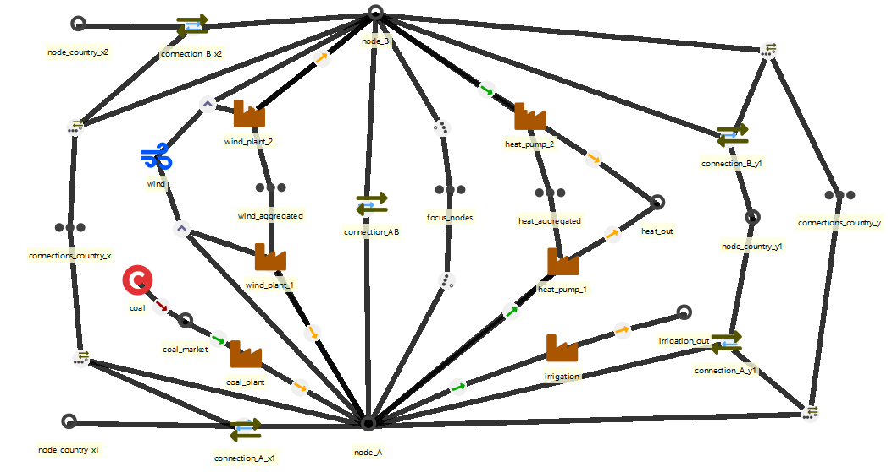
The focus_nodes group needs print_dispatch: yes and the unit and connection flowGroups need flow_aggregator: dispatch_plots_only.
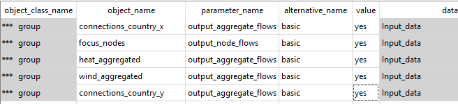
The resulting table has the flows to the focus_nodes group from units and connections. Additionally, the internal losses of the group are calculated. These are the flows between the nodes of the group and the storage losses. Here the losses come from the connection between nodeA and nodeB. Possible slacks to balance the nodes are included too.
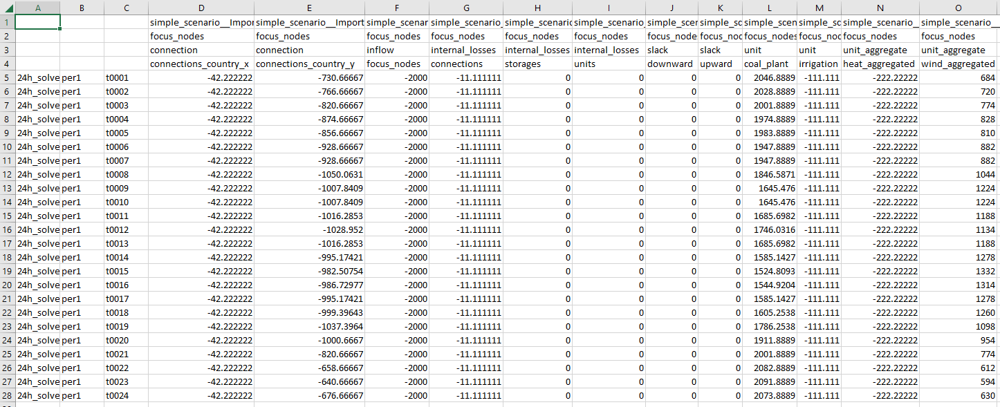
How to enable/disable outputs
Some of the outputs are optional. Some of these optional outputs are output by default while some are not (see below). Removing outputs speeds up the post-processing of results. The user can enable/disable them by changing the following parameters of the model entity:
output_node_balance_t: Default: yes. Produces detailed inflows and outflows for all the nodes for all timesteps. Mainly useful to diagnose what is wrong with the model.output_connection__node__node_flow_t: Default: yes. The flows between the nodes for each timestep.output_unit__node_flow_t: Default, yes. The flows from units to the nodes for each timestep.output_ramp_envelope: Default, no. Includes seven parameters that form the ramp room envelope. Shows the actual ramp as well as different levels of available ramping capability in a given node - for both directions, upward and downward. The first level includes ramproom in all the units, except VRE. The second level adds ramping room in VRE units (typically only downward, unless they have been curtailed. Finally, the last level adds potential ramping capability in the connections, which reflects only the ramproom in the connections themselves - the units/nodes behind the connection may or may not have capability to provide that ramp. (Parameter node_ramp_t)output_connection_flow_separate: Default, no. Produces the connection flows separately for both directions.output_unit__node_ramp_t: Default, no. Produces the ramps of individual units for all timesteps.output_horizon: Outputs the timesteps of the horizon outside the realized timesteps. Useful when constructing a stochastic model.
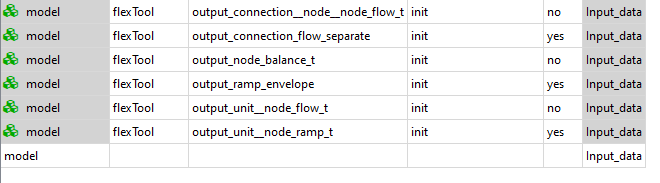
How to make the Flextool run faster
The list below contains potential ways to decrease the run-time of FlexTool models.
External changes (results will remain the same):
- Keep both the input database and Flextool on the same drive. If the database is on a different drive, it can slow the process. Avoid network drives.
- Try to ensure that there is sufficient memory available by closing other programs that use lot of memory. Linear optimization problems can require lot of memory.
- Use as fast computer as available. Both faster processors and more processors can decrease computation time.
Model changes (results will remain the same):
- Disable outputs that you don't need. This will speed up the result processing. See: How to enable/disable outputs
- When using HiGHS solver: in your solve's
solver_argumentsmap, you can setpresolve = onandparallel = onto speed up the optimisation. However, it can be better to turn HiGHS parallel off when executing multiple scnearios in parallel. - Especially with MIP problems, considering using a commercial solver like CPLEX (license required). See: How to use CPLEX as the solver
Model changes (results will be affected):
- Get rid of integer variables. Mixed integer programming can increase the solving time manyfold compared to the linear version especially if commercial solver is not available. MIP parameters are:
transfer_method: exact, change to reqular-
startup_method: binary, change to linear -
Set
virtual_unitsizeto the actual sub-unit size of the modeled plant whenstartup_method = binary. If you do not set it, FlexTool uses the fullexistingcapacity as the commitment granularity — every on/off decision moves the entire plant at once. For a large plant (say 1000 MW), that granularity is usually too coarse for the MIP to close to a useful tolerance in reasonable time: a realistic 3-day 3-representative-period UC problem with ~1 GW whole-unit commitment may run up against solver time limits at several percent MIP gap, while the same plant modelled withvirtual_unitsizematching its real sub-units (e.g. five × 200 MW boilers →virtual_unitsize = 200) closes to < 0.2 % in about a minute.virtual_unitsizeis not a free tuning knob — picking an arbitrarily small value (say 50 MW for a plant with no 50 MW sub-units) would let the solver commit fractions that don't physically exist, mis-representing minimum load and startup behavior. Choose the value that reflects the actual physical unit granularity of the modeled entity (e.g. individual boilers / turbines / strings). The clustered unit-commitment approach (Palmintier & Webster 2012) is just this: represent each real sub-unit as one unit in the integer count. When the modeled entity is inherently a single indivisible plant,virtual_unitsizeshould equalexisting— and you may have to accept that the MIP is slow, usestartup_method = linear, or aggregate differently.
Model changes (potentially large changes to the results --> need to understand how the particular analysis will be affected):
- Use representative periods for investment decisions. See: How to create a multi-year model
- Split the timeline into parts. The solving time increases exponentially with the model size. Multiple smaller solves can be faster. Splitting is best done with Rolling window solve and Nested rolling solve. See: How to use a rolling window for a dispatch model, How to use Nested Rolling window solves (investments and long-term storage)
- Aggregate data. Technological: Combine power plants that are using the same technology. Spatial: Combine nodes. Temporal: Use longer timesteps.
How to use Benders decomposition (spatial)
Large systems that naturally split into regions (e.g. an interconnected pan-continental network where each country's internal grid is cheap but the joint solve is large) can be solved with a spatial Benders decomposition. A coordinating master holds the inter-regional trade flows and the trade-connection investment plus one recourse variable per region; each region is solved as an operational subproblem with the master's trade fixed, returning duals that become optimality cuts the master accumulates. The master objective is a valid lower bound and the loop converges on the optimality gap.
Set up the regions in the database:
- create one
groupper region, list itsnodemembers viagroup__node - set the group parameter
decomposition_methodto benders_regional on each region group - declare at least two such region groups in the active scenario
See the group.decomposition_method parameter in Reference and the algorithm write-up in dev/decomposition.md.
Then turn on Benders decomposition on the solve itself — set the
solve parameter decomposition to benders on the solve(s) you want
decomposed (optionally tuning benders_max_iter and benders_tolerance;
they default to 50 / 1e-3). Then run normally:
python -m flextool.cli.cmd_run_flextool \
sqlite:///input_data.sqlite \
--scenario-name multi_region
The choice is per solve, so a single chain can mix schemes (e.g. a
Benders investment solve followed by a monolithic dispatch solve — the
Benders invest solve's realised trade + in-region capacity threads into
the downstream dispatch). The per-solve routing is in
flextool/engine_polars/_orchestration.py and the coordinator (master +
cut loop) in flextool/engine_polars/_benders.py. benders_max_iter
caps the cut loop and benders_tolerance is the relative
optimality-gap threshold for declaring convergence. Use Benders when the
per-region solve is cheap but the monolithic solve is expensive; if the
regions are tightly coupled (i.e. cross-region flows dominate the
dispatch) the cut loop may need many iterations and a monolithic solve is
usually better.
How to use timeset weights (non-RP weighted timesteps)
timeset.timeset_weights lets each timestep within a timeset carry a custom weight that is applied to the cost and slack terms in the objective. The typical use case is a coarse, OSeMOSYS-style timeslice structure where some timesteps cover more year-hours than others (wet vs. dry season, peak vs. off-peak day-types) — timeset_duration already controls how long each step is, but timeset_weights is what scales the contribution to the annual cost when those slices are uneven.
The parameter is a flat Map on the timeset entity: index is the timestep name, value is a float. Weights are normalised per period to sum to 1 and then re-scaled by the number of active timesteps, so uniform input reproduces weight = 1 per step (the default behaviour) and the absolute magnitude of the weights does not matter — only the relative shape does. Decoder lives in flextool/engine_polars/_timeline.py (_decode_timeset_weights) and the per-period normalisation is documented under TimelineConfig.timeset_weights in the same file. See also the timeset_weights entry in Reference.
Mutually exclusive: timeset_weights and representative_period_weights
A single timeset may carry either timeset_weights (per-step weights for non-RP timeslice models) or representative_period_weights (per-period weights for RP-clustered models), not both. The runner errors out if both are set on the same timeset.
How to read the LP scaling diagnostic report
Every solve runs the auto-scaling pipeline before handing the LP to the solver and writes a single audit artefact into solve_data/:
autoscale_<solve>.yaml— YAML audit (Layer 1 ranges, Layer 2 per-quantity-type plan, Layer 3user_bound_scale+ escape-tier plan)
A 1-line console verdict is also printed after each solve. The YAML covers (in order):
- Layer 1 — matrix / cost / bound / RHS log10 ranges and the cross-group max-ratio that gates whether Layers 2/3 fire
- Layer 2 — per-quantity-type power-of-2 column scalers (energy, capacity, monetary, …) with post-Layer-2 ranges
- Layer 3 — the
user_bound_scaleexponent HiGHS receives and any escape-valve folding
Auto-scaling never changes the LP optimum: every variable and constraint is unscaled back to the user's units before the solution is written out. The audit is purely diagnostic. Read it when:
- the solver runs slowly or hits its time limit
- HiGHS reports numerical trouble (ill-conditioning warnings, suspect infeasibility)
- you are about to file a bug — attaching the YAML saves a round-trip
- you are tuning a freshly-converted model and want to spot unit-mix mistakes early
- a rejected solve's hint flagged the post-autoscale LP as still wide-ranged (scaling may be implicated) — the YAML shows which layer (or which quantity type) could not compress the spread
The autoscale package lives at flextool/engine_polars/autoscale/ (_ranges.py / _layer2.py / _layer3.py / _report.py). For the user-facing guide and tuning tips, see dev/scaling.md.
How to export a partial Excel template (parameter-group picker)
When you only need a subset of the parameter universe — say, a small dispatch sandbox without investments or stochastics — you can export an Excel template restricted to selected parameter groups instead of the full reference template. The CLI supports this via the --groups flag on the export-to-tabular command:
python -m flextool.cli.cmd_export_to_tabular \
sqlite:///input_data.sqlite \
partial_template.xlsx \
--groups "vre,storage,reserves"
The flag takes a comma-separated list of parameter_group names. Parameters outside the listed groups are dropped, and sheets with no surviving parameter columns are removed unless they are explicitly listed in always_include_with_groups in flextool/export_to_tabular/export_settings.yaml.
The following groups are always kept regardless of the --groups selection (declared as required_groups in export_settings.yaml):
timelinemodelsolve_basicsbasics
These provide the structural backbone of any FlexTool model. Implementation: flextool/cli/cmd_export_to_tabular.py and flextool/export_to_tabular/sheet_config.py. The FlexTool GUI exposes the same picker under the "Add empty FlexTool input Excel" action (3.32.0). See also Excel interface for the Excel-as-input workflow.
How to use representative-period clustering with scalar profiles
The representative-period preprocessor in flextool/representative_periods/preprocess.py builds its clustering matrix from time-varying profile and node.inflow series. Constant-valued (scalar) profiles and inflows are now dropped from the clustering input on the way in — a constant series has zero variance, contributes no information to the period-similarity distance, and was previously causing per-character iteration crashes when params_to_dict returned the scalar as a string. The preprocessor prints a one-line note such as Skipping 3 scalar profile(s) and 1 scalar inflow(s) — clustering only considers time-varying series. so you can see exactly how many series were filtered out. There is nothing to configure: scalar profiles and inflows are still used by the model as constants, they just no longer participate in choosing the representative periods.